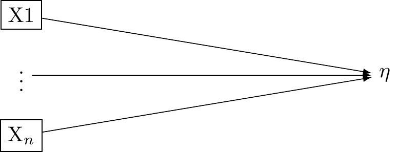
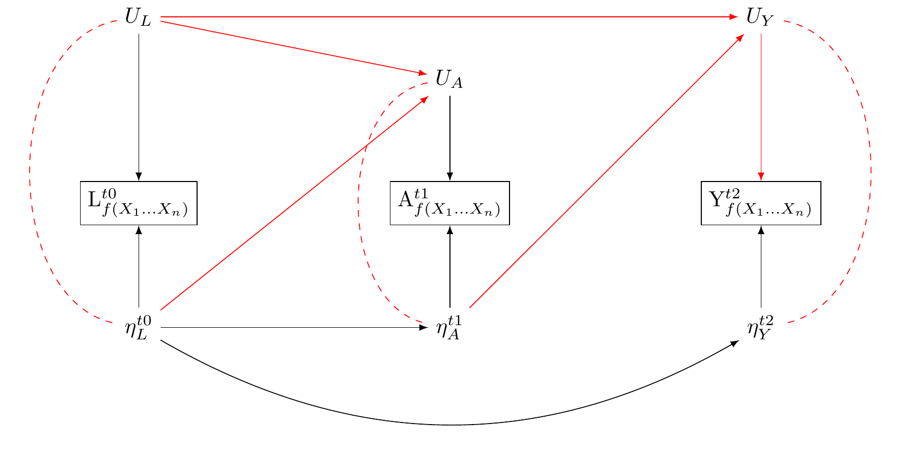

Harkness, Janet A, Fons JR Van de Vijver, and Timothy P Johnson. 2003. “Questionnaire Design in Comparative Research.”Cross-Cultural Survey Methods, 19–34.
Key concepts
The Formative Model in Factor Analysis
The Reflective Model in Factor Analysis
How to use causal Diagrams to evaluate assumptions.
Important
Understanding causal assumptions of measurement theory
Guidance on your final assessment.
Overview
By the end of this lecture you will:
Understand the causal assumptions implied by the factor analytic interpretation of the formative and reflective models.
Be able to distinguish between statistical and structural interpretations of these models.
Understand why Vanderweele thinks consistent causal estimation is possible using the theory of multiple versions of treatments for constructs with multiple indicators
Two ways of thinking about measurement in psychometric research.
In psychometric research, formative and reflective models describe the relationship between latent variables and their respective indicators. VanderWeele discusses this in the assigned reading for this week (Tyler J. VanderWeele 2022).
VanderWeele, Tyler J. 2022. “Constructed Measures and Causal Inference: Towards a New Model of Measurement for Psychosocial Constructs.”Epidemiology 33 (1): 141. https://doi.org/10.1097/EDE.0000000000001434.
Reflective Model (Factor Analysis)
In a reflective measurement model, also known as an effect indicator model, the latent variable is understood to cause the observed variables. In this model, changes in the latent variable cause changes in the observed variables. Each indicator (observed variable) is a ‘reflection’ of the latent variable. In other words, they are effects or manifestations of the latent variable. These relations are presented in Figure 1.
The reflective model may be expressed:
X_i = \lambda_i \eta + \varepsilon_i
Here, X_i is an observed variable (indicator), \lambda_i is the factor loading for X_i, \eta is the latent variable, and \varepsilon_i is the error term associated with X_i. It is assumed that all the indicators are interchangeable and have a common cause, which is the latent variable \eta.
In the conventional approach of factor analysis, the assumption is that a common latent variable is responsible for the correlation seen among the indicators. Thus, any fluctuation in the latent variable should immediately lead to similar changes in the indicators.These assumptions are presented in Figure 1.
Figure 1: Reflective model: assume univariate latent variable η giving rise to indicators X1…X3. Figure adapted from VanderWeele: doi: 10.1097/EDE.0000000000001434
The Formative Model (Factor Analysis)
In a formative measurement model, the observed variables are seen as causing or determining the latent variable. Here again, there is a single latent variable. However this latent variable is taken to be an effect of the underlying indicators. These relations are presented in Figure 2.
The formative model may be expressed:
\eta = \sum_i\lambda_i X_i + \varepsilon
In this equation, \eta is the latent variable, \lambda_i is the weight for X_i (the observed variable), and \varepsilon is the error term. The latent variable \eta is a composite of the observed variables X_i.
In the context of a formative model, correlation or interchangeability between indicators is not required. Each indicator contributes distinctively to the latent variable. As such, a modification in one indicator doesn’t automatically imply a corresponding change in the other indicators.

Figure 2: Formative model:: assume univariate latent variable from which the indicators X1…X3 give rise. Figure adapted from VanderWeele: doi: 10.1097/EDE.0000000000001434
Structural Interpretation of the formative model and reflective models (Factor Analysis)
However, this analysis of reflective and formative models assumed that the latent η was causally efficacious. This may not be the case (VanderWeele 2022)
VanderWeele distinguishes between statistical and structural interpretations of the equations preesented above.
Statistical Model: a mathematical construct that shows how observable variables, also known as indicators, are related to latent or unseen variables. These are presented in the equations above
Structural Model: A structural model refers to the causal assumptions or hypotheses about the relationships among variables in a statistical model. The assumptions of the factor analytic tradition are presented in Figure 2 and Figure 1 are structural models.
We have seen that the reflective model statistically implies that the observed variables (indicators) are reflections or manifestations of the latent variable, expressed as X_i = \lambda_i \eta + \varepsilon_i. However, the factor analytic tradition makes the additional structural assumption that a univariate latent variable is causally efficacious and influences the observed variables, as in: Figure 3 (a).
We have also seen that the formative model statistically implies that the latent variable is formed or influenced by the observed variables, expressed as \eta = \sum_i\lambda_i X_i + \varepsilon. However, the factor analytic tradition makes the additional assumption that the observed variables give rise to a univariate latent variable, as in Figure 3 (b).
The reflective model implies X_i = \lambda_i \eta + \varepsilon_i, which factor analysts take to imply Figure 3 (a).
Figure 3: The formative model implies \eta = \sum_i\lambda_i X_i + \varepsilon, which factor analysts take to imply Figure 3 (b).
Problems with the structural interpretations of the reflective and formative factor models.
While the statistical model X_i = \lambda_i \eta + \varepsilon_i aligns with Figure 3 (a), it also alings with Figure 4. Cross-sectional data, unfortunately, do not provide enough information to discern between these different structural interpretations.
Similarly, the statistical model \eta = \sum_i\lambda_i X_i + \varepsilon agrees with Figure 3 (b) but it also agrees with@fig-dag-reflectiveassumptions-compatible_again. Here too, cross-sectional data cannot decide between these two potential structural interpretations.
There are other, compatible structural interprestations as well. The formative and reflective conceptions of factor analysis are compatible with indicators having causal effects as shown in (fig_dag_multivariate_reality_again?). They are also compatible with a multivariate reality giving rise to multiple indicators as shown in Figure 6.
Figure 4: Formative model is compatible with indicators causing outcome.Figure adapted from VanderWeele: doi: 10.1097/EDE.0000000000001434
Figure 5: Reflective model is compatible with indicators causing the outcome. Figure adapted from VanderWeele: doi: 10.1097/EDE.0000000000001434
Multivariate reality gives rise to the indicators, from which we draw our measures. Figure adapted from VanderWeele: doi: 10.1097/EDE.0000000000001434
Figure 6: Although we take our constructs, A, to be functions of indicators, X, such that, perhaps only one or several of the indicators are efficacious.Figure adapted from VanderWeele: doi: 10.1097/EDE.0000000000001434
VanderWeele’s key observation is this:
While cross-sectional data can provide insights into the relationships between variables, they cannot conclusively determine the causal direction of these relationships.
This results is worrying. The structural assumptions of factor analysis underpin nearly all psychological research. If the cross-sectional data used to derive factor structures cannot decide whether the structural interpretations of factor models are accurate, where does that leave us?
More worrying still, VanderWeele discusses several longitudinal tests for structural interpretations of univariate latent variables that do not pass.
Where does that leave us? In psychology we have heard about a replication crisis. We might describe the reliance on factor models as an aspect of a much larger, and more worrying “causal crisis” (Bulbulia 2023)
Review of the theory of multiple versions of treatment
Multiple Versions of treatment. Heae, A is regarded to bbe a coarseneed version of K
Perhaps not all is lost. VanderWeele looks to the theory of multiple versions of treatment for solace.
Recall, a causal effect is defined as the difference in the expected potential outcome when everyone is exposed (perhaps contrary to fact) to one level of a treatment, conditional on their levels of a confounder, with the expected potential outcome when everyone is exposed to a a different level of a treatement (perhaps contrary to fact), conditional on their levels of a counfounder.
where \delta is the causal estimand on the difference scale (\mathbb{E}[Y^0 - Y^0]).
In causal inference, the multiple versions of treatment theory allows us to handle situations where the treatment isn’t uniform, but instead has several variations. Each variation of the treatment, or “version”, can have a different impact on the outcome. Consistency is not violated because it is redefined: for each version of the treatment, the outcome under that version is equal to the observed outcome when that version is received. Put differently we may think of the indicator A as corresponding to many version of the true treament K. Where conditional independence holds such that there is a absence of confounding for the effect of K on Y given L, we have: Y_k \coprod A|K,L. This states conditional on L, A gives no information about Y once K and L are accounted for. When Y = Y_k if K = k and Y_k is independent of K, condition on L, then A may be thought of as a coarsened indicator of K, as shown in (fig_dag_multiple_version_treatment_dag?). We may estimate consistent causal effects where:
The scenario represents a hypothetical randomised trial where within strata of covariates L, individuals in one group receive a treatment K version randomly assigned from the distribution of K distribution (A = 1, L = l) sub-population. Meanwhile, individuals in the other group receive a randomly assigned K version from (A = 0, L = l)
This theory finds its utility in practical scenarios where treatments seldom resemble each other – we discussed the example of obesity last week (see: (Tyler J. VanderWeele and Hernan 2013)).
VanderWeele, Tyler J, and Miguel A Hernan. 2013. “Causal Inference Under Multiple Versions of Treatment.”Journal of Causal Inference 1 (1): 1–20.
Reflective and formative measurement models may be approached as multiple versions of treatment
Specifically, we substitue K with \eta from the previous section, and compare the measurement response A = a + 1 with A = a. We discover that if the influence of \eta on Y is not confounded given L, then the multiple versions of reality consistent with the reflective and formative statistical models of reality will not lead to biased estimation. \delta retains its interpretability as a comparison in a hypothetical randomised trial in which the distribution of coarsened measures of \eta_A are balanced within levels of the treatment, conditional on \eta_L.
This connection between measurement and the multiple versions of treatment framework provides a hope for consistent causal inference varying reliabilities of measurement.
However, as with the theory of multiple treatments, we might not known how to interpret our results because we don’t know the true relationships between our measured indicators and underlying reality.
How can we do better?
Figure 7: Multiple Versions of treatment applied to measuremen.Figure adapted from VanderWeele: doi: 10.1097/EDE.0000000000001434
VanderWeele’s model of reality
VanderWeele’s article concludes as follows:
A preliminary outline of a more adequate approach to the construction and use of psychosocial measures might thus be summarized by the following propositions, that I have argued for in this article: (1) Traditional univariate reflective and formative models do not adequately capture the relations between the underlying causally relevant phenomena and our indicators and measures. (2) The causally relevant constituents of reality related to our constructs are almost always multidimensional, giving rise both to our indicators from which we construct measures, and also to our language and concepts, from which we can more precisely define constructs. (3) In measure construction, we ought to always specify a definition of the underlying construct, from which items are derived, and by which analytic relations of the items to the definition are made clear. (4) The presumption of a structural univariate reflective model impairs measure construction, evaluation, and use. (5) If a structural interpretation of a univariate reflective factor model is being proposed this should be formally tested, not presumed; factor analysis is not sufficient for assessing the relevant evidence. (6) Even when the causally relevant constituents of reality are multidimensional, and a univariate measure is used, we can still interpret associations with outcomes using theory for multiple versions of treatment, though the interpretation is obscured when we do not have a clear sense of what the causally relevant constituents are. (7) When data permit, examining associations item-by-item, or with conceptually related item sets, may give insight into the various facets of the construct.
A new integrated theory of measurement for psychosocial constructs is needed in light of these points – one that better respects the relations between our constructs, items, indicators, measures, and the underlying causally relevant phenomena. (VanderWeele 2022)
Figure 8: Multivariate reality gives rise to the latent variables.Figure adapted from VanderWeele: doi: 10.1097/EDE.0000000000001434
This seems to me sensible. However, Figure 8 this is not a causal graph. The arrows to not clearly represent causal relations. It leaves me unclear about what to practically do.
Let’s return to the three wave many-outcomes model described in previous weeks. How should we revise this model in light of measurement theory?
How theory of dependent and directed measurement error might be usefully employed to develop a pragmatic responses to construct measurement
By now you are all familiar with The New Zealand Attitudes and Values Study (NZAVS),which is a national probability survey collects a wide range of information, including data on distress, exercise habits, and cultural backgrounds.
Figure 9: Uncorrelated non-differential measurement error does not bias estimates under the null. Note, however, we assume that L is measured with sufficient precision to block the path from A_eta –> L_eta –> Y_eta, which, otherwise, we would assume to be open.
Consider a study that seeks to use this dataset to investigate the effect of regular exercise on psychological distress. In contrast to previous graphs, let us allow for latent reality to affect our measurements, as well as the discrepencies between our measurements and true underlying reality. We shall use Figure 9 as our initial guide.
We represent the true exercise by \eta_A. We represent true psychological distress by \eta_Y. Let \eta_L denote a persons true workload, and assume that this state of work affects both levels of excercise and psychological distress.
To bring the model into contact with measurement theory, Let us describe measurements of these latent true underlying realities as functions of multiple indicators: L_{f(X_1\dots X_n)}, A_{f(X_1\dots X_n)}, and A_{f(X_1\dots X_n)}. These constructs are measured realisations of the underlying true states. We assume that the true states of these variables affect their corresponding measured states, and so draw arrows from \eta_L\rightarrow{L_{f(X_1\dots X_n)}}, \eta_A\rightarrow{A_{f(X_1\dots X_n)}}, \eta_Y\rightarrow{Y_{f(X_1\dots X_n)}}.
We also assume unmeasured sources of error that affect the measurements: U_{L} \rightarrowL_{f(X_1\dots X_n)}, U_{A} \rightarrowA_{f(X_1\dots X_n)}, and U_{Y} \rightarrowY_{f(X_1\dots X_n)}. That is, we allow that our measured indicators may “see as through a mirror, in darkness,” the underlying true reality they hope to capture (Corinthians 13:12). We use U_{L}, U_{A} and U_{Y} to denote the unmeasured sources of error in the measured indicators. These are the unknown, and perhaps unknowable, darkness and mirror.
Allow that the true underlying reality represented by the \eta_{var} may be multivariate. Similarly, allow the true underlying reality represented by \U_{var} is multivariate.
We now have a causal diagramme that more precisely captures VanderWeele’s thinking as presented in Figure 8. In our Figure 9, we have fleshed out \mathcal{R} in a way that may include natural language concepts and scientific language, or constructs, as latent realities and latent unmeasured sources of error in our constructs.
The utility of describing the measurement dynamics using causal graphs is apparrent. We can understand that the measured states, once conditioned upon create collider biases which opens path between the unmeasured sources of error and the true underlying state that gives rise to our measurements. This is depicted by a the arrows U_{var} and from \eta_{var} into each var_{f(X1, X2,\dots X_n)}
Notice: where true unmeasured (multivariate) psycho-physical states are related to true unmeasured (multivariate) sources of error in the measurement of those states, the very act of measurement opens pathways to confounding.
If for each measured construct var_{f(X1, X2,\dots X_n)}, the sources of error U_{var} and the unmeasured consituents of reality that give rise to our measures \eta_{var} are uncorrelated with other variables U\prime_{var} and from \eta\prime_{var} and var\prime_{f(X1, X2,\dots X_n)}, our estimates may be downwardly biased toward the null. However, d-separation is preserved. Where errors are uncorrelated with true latent realities, there is no new pathway that opens information between our exposure and outcome. Consider the relations presented in Figure 10

Figure 10: Measurement error opens an additional pathway to confounding if either there are correlated errors, or a directed effect of the exposure on the errors of measured outcome.
Here,
\eta_L \rightarrow L: We assume that the true workload state affects its measurement. This measurement, however, may be affected by an unmeasured error source, U_{L}. Personal perceptions of workload can introduce this error. For instance, a person may perceive their workload differently based on recent personal experiences or cultural backgrounds. Additionally, unmeasured cultural influences like societal expectations of productivity could shape their responses independently of the true workload state. There may be cultural differences - Americans may verstate; the British may present effortless superiority.
\eta_A \rightarrow A: When it comes to exercise, the true state may affect the measured frequency (questions about exercise are not totally uninformative). However, this measurement is also affected by an unmeasured source of error, which we denote by U_{A}. For example, a cultural shift towards valuing physical health might prompt participants toreport higher activity levels, introducing an error, U_{A}.
\eta_Y \rightarrow Y: We assume questions about distress are not totally uninformative: actual distress affects the measured distress. However this measurement is subject to unmeasured error: U_{Y}. For instance, an increased societal acceptance of mental health might change how distress is reported creating an error, U_{Y}, in the measurement of distress. Such norms, moreover, may change over time.
U_{L} \rightarrow L, U_{A} \rightarrow A, and U_{Y} \rightarrow Y: These edges between the nodes indicate how each unmeasured error source can influence its corresponding measurement, leading to a discrepancy between the true state and the measured state.
U_{L} \rightarrow U_{A} and U_{L} \rightarrow U_{Y}: These relationships indicate that the error in the stress measurement can correlate with those in the exercise and mood measurements. This could stem from a common cultural bias affecting how a participant self-reports across these areas.
\eta_A \rightarrow U_{Y} and \eta_L \rightarrow U_{A}: These relationships indicate that the actual state of one variable can affect the error in another variable’s measurement. For example, a cultural emphasis on physical health leading to increased exercise might, in turn, affect the reporting of distress levels, causing an error, U_{Y}, in the distress measurement. Similarly, if a cultural trend pushes people to work more, it might cause them to over or underestimate their exercise frequency, introducing an error, U_{A}, in the exercise measurement.
Confounding control by baseline measures of exposure and outcome: Dependent Directed Measurement Error in Three-Wave Panels
We propose a three-wave panel design to control confounding. This design adjusts for baseline measurements of both exposure and the outcome.
Understanding this approach in the context of potential directed and correlated measurement errors gives us a clearer picture of its strengths and limitations.
This three-wave panel design incorporates baseline measurements of both exposure and confounders. As a result, any bias that could come from unmeasured sources of measurement errors should be uncorrelated with their baseline effects.
For instance, if individuals have a social desirability bias at the baseline, they would have to develop a different bias unrelated to the initial one for new bias to occur due to correlated unmeasured sources of measurement errors.
However, we cannot completely eliminate the possibility of such new bias development. There could also be potential new sources of bias from directed effects of the exposure on the error term of the outcome, which can often occur due to panel attrition.
To mitigate this risk, we adjust for panel attrition/non-response using methods like multiple imputation. We also consistently perform sensitivity analyses to detect any unanticipated bias.
Despite these potential challenges, it is worth noting that by including measures of both exposure and outcome at baseline, the chances of new confounding are significantly reduced.
Therefore, adopting this practice should be a standard procedure in multi-wave studies as it substantially minimizes the likelihood of introducing novel confounding factors.
Figure 11: TBA
Comment on slow changes
Over long periods of time we can expect additional sources of confounding. Changes in cultural norms and attitudes can occur over the duration of a longitudinal study like the NZAVS, leading to residual confounding. For example, if there is a cultural shift towards increased acceptance of mental health issues, this might change how psychological distress is reported over time, irrespective of baseline responses.
Need for Sensitivity Analysis The Key takehome message is that we must always perform sensitivity analyses because we can never be certain that our confounding control strategy has worked.
Lab: Advice on you Final Report
Intoduction
Answer the following:
State the Question: is my question clearly stated? If not, state it.
Relevance of the Question: Have I explained its importance? If not, explain.
Subgroup Analysis: Does my question involve a subgroup (e.g., cultural group)? If not, develop a subgroup analysis question.
Causality of the Question: Is my question causal? Briefly explain what this means with reference to the potential outcomes framework.
State how you will use time-series data to address causality.
Define your exposure.
Define your outcome(s)
Explain how the the exposure and outcome is relevant to your question.
Define your causal estimand (see: lecture 9). Hint: it is ATE_g_risk difference = E[Y(1)-(0)|G,L], where G is your multiple-group indicator and L is your set of baseline confounders.
Methods
Consider any ethical implications.
Explain the sample. Provide descriptive statistics
Discuss inclusion criteria.
Discuss how your sample relates to the “source population” (lecture 9.)
Explain NZAVS measures. State the questions used in the items
In your own words describe how the data meet the following assumptions required for causal inference:
Positivity: Can we intervene on the exposure at all levels of the covariates? Use the code I provided to test whether there is change in the exposure from the baseline in the source population(s)
Consistency: Can I interpret what it means to intervene on the exposure?
Exchangeability: Are different versions of the exposure conditionally exchangeable given measured baseline confounders? This requires stating baseline confounders and explaining how they may be related to both the exposure and outcome. As part of this, you must explain why the baseline measure of your exposure and outcome are included as potential confounders.
Note: Unmeasured Confounders: Does previous science suggest the presence of unmeasured confounders? (e.g. childhood exposures that are not measured).
Draw a causal diagram: Have I drawn a causal diagram (DAG) to highlight both measured and unmeasured sources of confounding?
Measurement Error: Have I described potential biases from measurement errors? Return to lecture 11.
State that you do not have missing data in this synthetic dataset, but that ordinarily missing data would need to be handled.
State what your estimator will be. Note I’ve given you the following text to modify:
The Doubly Robust Estimation method for Subgroup Analysis Estimator is a sophisticated tool combining features of both IPTW and G-computation methods, providing unbiased estimates if either the propensity score or outcome model is correctly specified. The process involves five main steps:
Step 1 involves the estimation of the propensity score, a measure of the conditional probability of exposure given the covariates and the subgroup indicator. This score is calculated using statistical models such as logistic regression, with the model choice depending on the nature of the data and exposure. Weights for each individual are then calculated using this propensity score. These weights depend on the exposure status and are computed differently for exposed and unexposed individuals. The estimation of propensity scores is performed separately within each subgroup stratum.
Step 2 focuses on fitting a weighted outcome model, making use of the previously calculated weights from the propensity scores. This model estimates the outcome conditional on exposure, covariates, and subgroup, integrating the weights into the estimation process. Unlike in propensity score model estimation, covariates are included as variables in the outcome model. This inclusion makes the method doubly robust - providing a consistent effect estimate if either the propensity score or the outcome model is correctly specified, thereby reducing the assumption of correct model specification.
Step 3 entails the simulation of potential outcomes for each individual in each subgroup. These hypothetical scenarios assume universal exposure to the intervention within each subgroup, regardless of actual exposure levels. The expectation of potential outcomes is calculated for each individual in each subgroup, using individual-specific weights. These scenarios are performed for both the current and alternative interventions.
Step 4 is the estimation of the average causal effect for each subgroup, achieved by comparing the computed expected values of potential outcomes under each intervention level. The difference represents the average causal effect of changing the exposure within each subgroup.
Step 5 involves comparing differences in causal effects across groups by calculating the differences in the estimated causal effects between different subgroups. Confidence intervals and standard errors for these calculations are determined using simulation-based inference methods (Greifer et al. 2023). This step allows for a comprehensive comparison of the impact of different interventions across various subgroups, while encorporating uncertainty.
State what E-values are and how you will use them to clarify the risk of unmeasured confounding.
Results
Use the scripts I have provided as a template for your analysis.
Propensity Score Reporting: Detail the process of propensity score derivation, including the model used and any variable transformations: e.g.: A ~ x1 + x2 + x3 + .... using logistic regression, all continuous predictors were transformed to z-scores
WeightIt Package Utilisation: Explicitly mention the use of the ‘WeightIt’ package in R, including any specific options or parameters used in the propensity score estimation process (Greifer 2023).
Report if different methods were used to obtain propensity scores, and the reasons behind the choice of methods such as ‘ebal’, ‘energy’, and ‘ps’.
If your exposure is continuous only the ‘energy’ option was used for propensity score estimation.
Subgroup Estimation: Confirm that the propensity scores for subgroups were estimated separately, and discuss how the weights were subsequently combined with the original data.
Covariate Balance: Include a Love plot to visually represent covariate balance on the exposure both before and after weighting. The script will generate these plots.
Weighting Algorithm Statistics: Report the statistics for the weighting algorithms as provided by the WeightIt package, including any measures of balance or fit. The script I gave you will generate this information
Greifer, Noah. 2023. WeightIt: Weighting for Covariate Balance in Observational Studies.
Example:
We estimated propensity scores by fitting a model for the exposure A as it is predicted by the set of baseline covariates defined by L. Because we are interested in effect modification by group, we fit different propensity score models for within strata of G using the subgroup command of the WeightIt package. Thus the propensity score is the the probability of receiving a value of a treatment (A=a) conditional on the covariates L, and stratum within G. We compared balance using the following methods of weighting: “ebal” or entropy balancing, “energy” or energy balancing, and “ps” or traditional inverse probability of weighting balancing. Of these methods “ebal” performed the best. Table X and Figure Y present the results of the ebalancing method.
Interpretation of Propensity Scores: we interpret the proposensity scores as yeilding good balance across the exposure conditions.
Outcome Regression Model: Clearly report the type of regression model used to estimate outcome model coefficients (e.g., linear regression, Poisson, binomial), and mention if the exposure was interacted with the baseline covariates. Do not report model coefficients as these have no interpretation. Example
We fit a linear model using maximum likelihood estimation with the outcome Y predicted by the exposure A. We interacted the exposure with all baseline confounders L. Continuous baseline confounders were converted to z-scores, whereas categorical exposures were not. Also interacted with all baseline confounders was a term for the subgroup interactoin. This allowed uas to flexibily fit non-linearities for the modification of the effect of the exposure within levels of the levels of the cultural group strata of interest. We note that model coefficients have no interpretation in this context so are not reported. The remaining steps of Doubly-Robust estimation were performed as outlined in the Method section. We calculated confidence intervals and standard errors, using the clarify package in R, which relies on simulation based inference for these quantities of interest (Greifer et al. 2023)
Greifer, Noah, Steven Worthington, Stefano Iacus, and Gary King. 2023. Clarify: Simulation-Based Inference for Regression Models. https://iqss.github.io/clarify/.
Report the causal estimates.
ATE contrasts for groups in setting the exposure to for each group in setting level A = a and A = a*
differences between groups in the magnitude of the effects. (ATE_group 1 - ATE_group_2)
Report the E-value: how sensitive are your results to unmeasured confounding?
Discussion
Make sure to hit these points:
Consider the following ideas about what to discuss in one’s findings. The order of exposition might be different.
Summary of results: What did you find?
Interpretation of E-values: Interpret the E-values used for sensitivity analysis. State what they represent in terms of the robustness of the findings to potential unmeasured confounding.
Causal Effect Interpretation: What is the interest of the effect, if any, if an effect was observed? Interpret the average causal effect of changing the exposure level within each subgroup, and discuss its relevance to the research question.
Comparison of Subgroups: Discuss how differences in causal effect estimates between different subgroups, if observed, or if not observed, contribute to the overall findings of the study.
Uncertainty and Confidence Intervals: Consider the uncertainty around the estimated causal effects, and interpret the confidence intervals to understand the precision of the estimates.
Generalisability and Transportability: Reflect on the generalizability of the study results to other contexts or populations. Discuss any factors that might influence the transportability of the causal effects found in the study. (Again see lecture 9.)
Assumptions and Limitations: Reflect on the assumptions made during the study and identify any limitations in the methodology that could affect the interpretation of results. State that the implications of different intervention levels on potential outcomes are not analysed.
Theoretical Relevance: How are these findings relevant to existing theories.
Replication and Future Research: Consider how the study could be replicated or expanded upon in future research, and how the findings contribute to the existing body of knowledge in the field.
Real-World Implications: Discuss the real-world implications of the findings, and how they could be applied in policy, practice, or further research.
Example anlaysis (week 10)
Packages
report::cite_packages()
- Arel-Bundock V, Greifer N, Heiss A (2024). "How to Interpret Statistical Models Using marginaleffects for R and Python." _Journal of Statistical Software_, *111*(9), 1-32. doi:10.18637/jss.v111.i09 <https://doi.org/10.18637/jss.v111.i09>.
- Barrett M (2021). _ggokabeito: 'Okabe-Ito' Scales for 'ggplot2' and 'ggraph'_. R package version 0.1.0, <https://CRAN.R-project.org/package=ggokabeito>.
- Bates D, Mächler M, Bolker B, Walker S (2015). "Fitting Linear Mixed-Effects Models Using lme4." _Journal of Statistical Software_, *67*(1), 1-48. doi:10.18637/jss.v067.i01 <https://doi.org/10.18637/jss.v067.i01>.
- Bates D, Maechler M, Jagan M (2025). _Matrix: Sparse and Dense Matrix Classes and Methods_. R package version 1.7-2, <https://CRAN.R-project.org/package=Matrix>.
- Bengtsson H (2021). "A Unifying Framework for Parallel and Distributed Processing in R using Futures." _The R Journal_, *13*(2), 208-227. doi:10.32614/RJ-2021-048 <https://doi.org/10.32614/RJ-2021-048>, <https://doi.org/10.32614/RJ-2021-048>.
- Bengtsson H (2021). "A Unifying Framework for Parallel and Distributed Processing in R using Futures." _The R Journal_, *13*(2), 208-227. doi:10.32614/RJ-2021-048 <https://doi.org/10.32614/RJ-2021-048>, <https://doi.org/10.32614/RJ-2021-048>.
- Bengtsson H (2024). _progressr: An Inclusive, Unifying API for Progress Updates_. R package version 0.15.1, <https://CRAN.R-project.org/package=progressr>.
- Blair G, Cooper J, Coppock A, Humphreys M, Bicalho C, Fultz N, Medina L (2021). _DesignLibrary: Library of Research Designs_. R package version 0.1.10, <https://CRAN.R-project.org/package=DesignLibrary>.
- Blair G, Cooper J, Coppock A, Humphreys M, Rudkin A, Fultz N (2024). _fabricatr: Imagine Your Data Before You Collect It_. R package version 1.0.2, <https://CRAN.R-project.org/package=fabricatr>.
- Blair G, Cooper J, Coppock A, Humphreys M, Sonnet L (2024). _estimatr: Fast Estimators for Design-Based Inference_. R package version 1.0.4, <https://CRAN.R-project.org/package=estimatr>.
- Blair G, Coppock A, Humphreys M (2023). _Research Design in the Social Sciences: Declaration, Diagnosis, and Redesign_. Princeton University Press, Princeton. <https://book.declaredesign.org>. Blair G, Cooper J, Coppock A, Humphreys M (2019). "Declaring and Diagnosing Research Designs." _American Political Science Review_, *113*, 838-859. <https://declaredesign.org/paper.pdf>.
- Brown C (2018). _formula.tools: Programmatic Utilities for Manipulating Formulas, Expressions, Calls, Assignments and Other R Objects_. R package version 1.7.1, <https://CRAN.R-project.org/package=formula.tools>.
- Bulbulia J (2024). _margot: MARGinal Observational Treatment-effects_. doi:10.5281/zenodo.10907724 <https://doi.org/10.5281/zenodo.10907724>, R package version 0.3.1.1 Functions to obtain MARGinal Observational Treatment-effects from observational data., <https://go-bayes.github.io/margot/>.
- Chang W (2023). _extrafont: Tools for Using Fonts_. R package version 0.19, <https://CRAN.R-project.org/package=extrafont>.
- Chen T, He T, Benesty M, Khotilovich V, Tang Y, Cho H, Chen K, Mitchell R, Cano I, Zhou T, Li M, Xie J, Lin M, Geng Y, Li Y, Yuan J (2024). _xgboost: Extreme Gradient Boosting_. R package version 1.7.8.1, <https://CRAN.R-project.org/package=xgboost>.
- Christopher H. Jackson (2011). "Multi-State Models for Panel Data: The msm Package for R." _Journal of Statistical Software_, *38*(8), 1-29. doi:10.18637/jss.v038.i08 <https://doi.org/10.18637/jss.v038.i08>.
- Coppock A (2023). _randomizr: Easy-to-Use Tools for Common Forms of Random Assignment and Sampling_. R package version 1.0.0, <https://CRAN.R-project.org/package=randomizr>.
- Csárdi G, Hester J, Wickham H, Chang W, Morgan M, Tenenbaum D (2024). _remotes: R Package Installation from Remote Repositories, Including 'GitHub'_. R package version 2.5.0, <https://CRAN.R-project.org/package=remotes>.
- Eddelbuettel D, Francois R, Allaire J, Ushey K, Kou Q, Russell N, Ucar I, Bates D, Chambers J (2025). _Rcpp: Seamless R and C++ Integration_. R package version 1.0.14, <https://CRAN.R-project.org/package=Rcpp>. Eddelbuettel D, François R (2011). "Rcpp: Seamless R and C++ Integration." _Journal of Statistical Software_, *40*(8), 1-18. doi:10.18637/jss.v040.i08 <https://doi.org/10.18637/jss.v040.i08>. Eddelbuettel D (2013). _Seamless R and C++ Integration with Rcpp_. Springer, New York. doi:10.1007/978-1-4614-6868-4 <https://doi.org/10.1007/978-1-4614-6868-4>, ISBN 978-1-4614-6867-7. Eddelbuettel D, Balamuta J (2018). "Extending R with C++: A Brief Introduction to Rcpp." _The American Statistician_, *72*(1), 28-36. doi:10.1080/00031305.2017.1375990 <https://doi.org/10.1080/00031305.2017.1375990>.
- Firke S (2024). _janitor: Simple Tools for Examining and Cleaning Dirty Data_. R package version 2.2.1, <https://CRAN.R-project.org/package=janitor>.
- Friedman J, Tibshirani R, Hastie T (2010). "Regularization Paths for Generalized Linear Models via Coordinate Descent." _Journal of Statistical Software_, *33*(1), 1-22. doi:10.18637/jss.v033.i01 <https://doi.org/10.18637/jss.v033.i01>. Simon N, Friedman J, Tibshirani R, Hastie T (2011). "Regularization Paths for Cox's Proportional Hazards Model via Coordinate Descent." _Journal of Statistical Software_, *39*(5), 1-13. doi:10.18637/jss.v039.i05 <https://doi.org/10.18637/jss.v039.i05>. Tay JK, Narasimhan B, Hastie T (2023). "Elastic Net Regularization Paths for All Generalized Linear Models." _Journal of Statistical Software_, *106*(1), 1-31. doi:10.18637/jss.v106.i01 <https://doi.org/10.18637/jss.v106.i01>.
- Greifer N (2024). _cobalt: Covariate Balance Tables and Plots_. R package version 4.5.5, <https://CRAN.R-project.org/package=cobalt>.
- Greifer N (2024). _WeightIt: Weighting for Covariate Balance in Observational Studies_. R package version 1.3.2, <https://CRAN.R-project.org/package=WeightIt>.
- Greifer N, Worthington S, Iacus S, King G (2024). _clarify: Simulation-Based Inference for Regression Models_. R package version 0.2.1, <https://CRAN.R-project.org/package=clarify>.
- Grolemund G, Wickham H (2011). "Dates and Times Made Easy with lubridate." _Journal of Statistical Software_, *40*(3), 1-25. <https://www.jstatsoft.org/v40/i03/>.
- Halekoh U, Højsgaard S, Yan J (2006). "The R Package geepack for Generalized Estimating Equations." _Journal of Statistical Software_, *15/2*, 1-11. Yan J, Fine JP (2004). "Estimating Equations for Association Structures." _Statistics in Medicine_, *23*, 859-880. Yan J (2002). "geepack: Yet Another Package for Generalized Estimating Equations." _R-News_, *2/3*, 12-14.
- Hansen BB, Klopfer SO (2006). "Optimal full matching and related designs via network flows." _Journal of Computational and Graphical Statistics_, *15*(3), 609-627.
- Hastie T (2024). _gam: Generalized Additive Models_. R package version 1.22-5, <https://CRAN.R-project.org/package=gam>.
- Helske S, Helske J (2019). "Mixture Hidden Markov Models for Sequence Data: The seqHMM Package in R." _Journal of Statistical Software_, *88*(3), 1-32. doi:10.18637/jss.v088.i03 <https://doi.org/10.18637/jss.v088.i03>. Helske J, Helske S (2023). _seqHMM: Mixture hidden Markov models for social sequence data and other multivariate, multichannel categorical time series_. R package version 1.2.6, <https://cran.r-project.org/package=seqHMM>.
- Henry L, Wickham H (2025). _rlang: Functions for Base Types and Core R and 'Tidyverse' Features_. R package version 1.1.5, <https://CRAN.R-project.org/package=rlang>.
- Hester J, Bryan J (2024). _glue: Interpreted String Literals_. R package version 1.8.0, <https://CRAN.R-project.org/package=glue>.
- Hester J, Wickham H, Csárdi G (2024). _fs: Cross-Platform File System Operations Based on 'libuv'_. R package version 1.6.5, <https://CRAN.R-project.org/package=fs>.
- Ho D, Imai K, King G, Stuart E (2011). "MatchIt: Nonparametric Preprocessing for Parametric Causal Inference." _Journal of Statistical Software_, *42*(8), 1-28. doi:10.18637/jss.v042.i08 <https://doi.org/10.18637/jss.v042.i08>.
- Honaker J, King G, Blackwell M (2011). "Amelia II: A Program for Missing Data." _Journal of Statistical Software_, *45*(7), 1-47. doi:10.18637/jss.v045.i07 <https://doi.org/10.18637/jss.v045.i07>.
- Iannone R, Cheng J, Schloerke B, Hughes E, Lauer A, Seo J, Brevoort K, Roy O (2024). _gt: Easily Create Presentation-Ready Display Tables_. R package version 0.11.1, <https://CRAN.R-project.org/package=gt>.
- J L (2006). "Plotrix: a package in the red light district of R." _R-News_, *6*(4), 8-12.
- Kassambara A (2023). _ggpubr: 'ggplot2' Based Publication Ready Plots_. R package version 0.6.0, <https://CRAN.R-project.org/package=ggpubr>.
- Kay M (2024). "ggdist: Visualizations of Distributions and Uncertainty in the Grammar of Graphics." _IEEE Transactions on Visualization and Computer Graphics_, *30*(1), 414-424. doi:10.1109/TVCG.2023.3327195 <https://doi.org/10.1109/TVCG.2023.3327195>. Kay M (2024). _ggdist: Visualizations of Distributions and Uncertainty_. doi:10.5281/zenodo.3879620 <https://doi.org/10.5281/zenodo.3879620>, R package version 3.3.2, <https://mjskay.github.io/ggdist/>.
- Lüdecke D (2018). "ggeffects: Tidy Data Frames of Marginal Effects from Regression Models." _Journal of Open Source Software_, *3*(26), 772. doi:10.21105/joss.00772 <https://doi.org/10.21105/joss.00772>.
- Lüdecke D, Ben-Shachar M, Patil I, Makowski D (2020). "Extracting, Computing and Exploring the Parameters of Statistical Models using R." _Journal of Open Source Software_, *5*(53), 2445. doi:10.21105/joss.02445 <https://doi.org/10.21105/joss.02445>.
- Lumley T (2024). "survey: analysis of complex survey samples." R package version 4.4. Lumley T (2004). "Analysis of Complex Survey Samples." _Journal of Statistical Software_, *9*(1), 1-19. R package verson 2.2. Lumley T (2010). _Complex Surveys: A Guide to Analysis Using R: A Guide to Analysis Using R_. John Wiley and Sons.
- Microsoft, Weston S (2022). _foreach: Provides Foreach Looping Construct_. R package version 1.5.2, <https://CRAN.R-project.org/package=foreach>.
- Milborrow S (2024). _plotmo: Plot a Model's Residuals, Response, and Partial Dependence Plots_. R package version 3.6.4, <https://CRAN.R-project.org/package=plotmo>.
- Milborrow S, Hastie T, Tibshirani R (2024). _earth: Multivariate Adaptive Regression Splines_. R package version 5.3.4, <https://CRAN.R-project.org/package=earth>.
- Mullen KM, van Stokkum IHM (2024). _nnls: The Lawson-Hanson Algorithm for Non-Negative Least Squares (NNLS)_. R package version 1.6, <https://CRAN.R-project.org/package=nnls>.
- Müller K (2020). _here: A Simpler Way to Find Your Files_. R package version 1.0.1, <https://CRAN.R-project.org/package=here>.
- Müller K, Wickham H (2023). _tibble: Simple Data Frames_. R package version 3.2.1, <https://CRAN.R-project.org/package=tibble>.
- Ooms J (2024). _katex: Rendering Math to HTML, 'MathML', or R-Documentation Format_. R package version 1.5.0, <https://CRAN.R-project.org/package=katex>.
- Ooms J (2024). _pdftools: Text Extraction, Rendering and Converting of PDF Documents_. R package version 3.4.1, <https://CRAN.R-project.org/package=pdftools>.
- Pedersen T (2024). _patchwork: The Composer of Plots_. R package version 1.3.0, <https://CRAN.R-project.org/package=patchwork>.
- Pishgar F, Greifer N, Leyrat C, Stuart E (2021). "MatchThem:: Matching and Weighting after Multiple Imputation." _The R Journal_. doi:10.32614/RJ-2021-073 <https://doi.org/10.32614/RJ-2021-073>, <https://journal.r-project.org/archive/2021/RJ-2021-073/>.
- Polley E, LeDell E, Kennedy C, van der Laan M (2024). _SuperLearner: Super Learner Prediction_. R package version 2.0-29, <https://CRAN.R-project.org/package=SuperLearner>.
- R Core Team (2024). _R: A Language and Environment for Statistical Computing_. R Foundation for Statistical Computing, Vienna, Austria. <https://www.R-project.org/>.
- Rich B (2023). _table1: Tables of Descriptive Statistics in HTML_. R package version 1.4.3, <https://CRAN.R-project.org/package=table1>.
- Richardson N, Cook I, Crane N, Dunnington D, François R, Keane J, Moldovan-Grünfeld D, Ooms J, Wujciak-Jens J, Apache Arrow (2025). _arrow: Integration to 'Apache' 'Arrow'_. R package version 18.1.0.1, <https://CRAN.R-project.org/package=arrow>.
- Robinson D, Hayes A, Couch S (2024). _broom: Convert Statistical Objects into Tidy Tibbles_. R package version 1.0.7, <https://CRAN.R-project.org/package=broom>.
- Robitzsch A, Grund S (2024). _miceadds: Some Additional Multiple Imputation Functions, Especially for 'mice'_. R package version 3.17-44, <https://CRAN.R-project.org/package=miceadds>.
- Sjoberg D, Whiting K, Curry M, Lavery J, Larmarange J (2021). "Reproducible Summary Tables with the gtsummary Package." _The R Journal_, *13*, 570-580. doi:10.32614/RJ-2021-053 <https://doi.org/10.32614/RJ-2021-053>, <https://doi.org/10.32614/RJ-2021-053>.
- Sjolander A, Dahlqwist E (2021). _stdReg: Regression Standardization_. R package version 3.4.1, <https://CRAN.R-project.org/package=stdReg>.
- Therneau T (2024). _A Package for Survival Analysis in R_. R package version 3.8-3, <https://CRAN.R-project.org/package=survival>. Terry M. Therneau, Patricia M. Grambsch (2000). _Modeling Survival Data: Extending the Cox Model_. Springer, New York. ISBN 0-387-98784-3.
- Tibshirani J, Athey S, Sverdrup E, Wager S (2024). _grf: Generalized Random Forests_. R package version 2.4.0, <https://CRAN.R-project.org/package=grf>.
- Tierney N, Cook D (2023). "Expanding Tidy Data Principles to Facilitate Missing Data Exploration, Visualization and Assessment of Imputations." _Journal of Statistical Software_, *105*(7), 1-31. doi:10.18637/jss.v105.i07 <https://doi.org/10.18637/jss.v105.i07>.
- van Buuren S, Groothuis-Oudshoorn K (2011). "mice: Multivariate Imputation by Chained Equations in R." _Journal of Statistical Software_, *45*(3), 1-67. doi:10.18637/jss.v045.i03 <https://doi.org/10.18637/jss.v045.i03>.
- van der Wal WM, Geskus RB (2011). "ipw: An R Package for Inverse Probability Weighting." _Journal of Statistical Software_, *43*(13), 1-23. doi:10.18637/jss.v043.i13 <https://doi.org/10.18637/jss.v043.i13>.
- Waring E, Quinn M, McNamara A, Arino de la Rubia E, Zhu H, Ellis S (2022). _skimr: Compact and Flexible Summaries of Data_. R package version 2.1.5, <https://CRAN.R-project.org/package=skimr>.
- Wickham H (2016). _ggplot2: Elegant Graphics for Data Analysis_. Springer-Verlag New York. ISBN 978-3-319-24277-4, <https://ggplot2.tidyverse.org>.
- Wickham H (2023). _conflicted: An Alternative Conflict Resolution Strategy_. R package version 1.2.0, <https://CRAN.R-project.org/package=conflicted>.
- Wickham H (2023). _forcats: Tools for Working with Categorical Variables (Factors)_. R package version 1.0.0, <https://CRAN.R-project.org/package=forcats>.
- Wickham H (2023). _stringr: Simple, Consistent Wrappers for Common String Operations_. R package version 1.5.1, <https://CRAN.R-project.org/package=stringr>.
- Wickham H, Averick M, Bryan J, Chang W, McGowan LD, François R, Grolemund G, Hayes A, Henry L, Hester J, Kuhn M, Pedersen TL, Miller E, Bache SM, Müller K, Ooms J, Robinson D, Seidel DP, Spinu V, Takahashi K, Vaughan D, Wilke C, Woo K, Yutani H (2019). "Welcome to the tidyverse." _Journal of Open Source Software_, *4*(43), 1686. doi:10.21105/joss.01686 <https://doi.org/10.21105/joss.01686>.
- Wickham H, Bryan J, Barrett M, Teucher A (2024). _usethis: Automate Package and Project Setup_. R package version 3.1.0, <https://CRAN.R-project.org/package=usethis>.
- Wickham H, François R, Henry L, Müller K, Vaughan D (2023). _dplyr: A Grammar of Data Manipulation_. R package version 1.1.4, <https://CRAN.R-project.org/package=dplyr>.
- Wickham H, Henry L (2025). _purrr: Functional Programming Tools_. R package version 1.0.4, <https://CRAN.R-project.org/package=purrr>.
- Wickham H, Hester J, Bryan J (2024). _readr: Read Rectangular Text Data_. R package version 2.1.5, <https://CRAN.R-project.org/package=readr>.
- Wickham H, Hester J, Chang W, Bryan J (2022). _devtools: Tools to Make Developing R Packages Easier_. R package version 2.4.5, <https://CRAN.R-project.org/package=devtools>.
- Wickham H, Vaughan D, Girlich M (2024). _tidyr: Tidy Messy Data_. R package version 1.3.1, <https://CRAN.R-project.org/package=tidyr>.
- Williams N, Díaz I (2023). "lmtp: An R package for estimating the causal effects of modified treatment policies." _Observational Studies_. <https://muse.jhu.edu/article/883479>. Díaz I, Williams N, Hoffman K, Schneck E (2021). "Non-parametric causal effects based on longitudinal modified treatment policies." _Journal of the American Statistical Association_. doi:10.1080/01621459.2021.1955691 <https://doi.org/10.1080/01621459.2021.1955691>.
- Wright MN, Ziegler A (2017). "ranger: A Fast Implementation of Random Forests for High Dimensional Data in C++ and R." _Journal of Statistical Software_, *77*(1), 1-17. doi:10.18637/jss.v077.i01 <https://doi.org/10.18637/jss.v077.i01>.
- Xie Y (2024). _knitr: A General-Purpose Package for Dynamic Report Generation in R_. R package version 1.49, <https://yihui.org/knitr/>. Xie Y (2015). _Dynamic Documents with R and knitr_, 2nd edition. Chapman and Hall/CRC, Boca Raton, Florida. ISBN 978-1498716963, <https://yihui.org/knitr/>. Xie Y (2014). "knitr: A Comprehensive Tool for Reproducible Research in R." In Stodden V, Leisch F, Peng RD (eds.), _Implementing Reproducible Computational Research_. Chapman and Hall/CRC. ISBN 978-1466561595.
- Xie Y (2024). _tinytex: Helper Functions to Install and Maintain TeX Live, and Compile LaTeX Documents_. R package version 0.54, <https://github.com/rstudio/tinytex>. Xie Y (2019). "TinyTeX: A lightweight, cross-platform, and easy-to-maintain LaTeX distribution based on TeX Live." _TUGboat_, *40*(1), 30-32. <https://tug.org/TUGboat/Contents/contents40-1.html>.
- Zeileis A, Croissant Y (2010). "Extended Model Formulas in R: Multiple Parts and Multiple Responses." _Journal of Statistical Software_, *34*(1), 1-13. doi:10.18637/jss.v034.i01 <https://doi.org/10.18637/jss.v034.i01>.
- Zeileis A, Köll S, Graham N (2020). "Various Versatile Variances: An Object-Oriented Implementation of Clustered Covariances in R." _Journal of Statistical Software_, *95*(1), 1-36. doi:10.18637/jss.v095.i01 <https://doi.org/10.18637/jss.v095.i01>. Zeileis A (2004). "Econometric Computing with HC and HAC Covariance Matrix Estimators." _Journal of Statistical Software_, *11*(10), 1-17. doi:10.18637/jss.v011.i10 <https://doi.org/10.18637/jss.v011.i10>. Zeileis A (2006). "Object-Oriented Computation of Sandwich Estimators." _Journal of Statistical Software_, *16*(9), 1-16. doi:10.18637/jss.v016.i09 <https://doi.org/10.18637/jss.v016.i09>.
- Zhu H (2024). _kableExtra: Construct Complex Table with 'kable' and Pipe Syntax_. R package version 1.4.0, <https://CRAN.R-project.org/package=kableExtra>.
---title: "Measurement from a Causal Perspective"date: "2025-JUN-03"bibliography: /Users/joseph/GIT/templates/bib/references.bibeditor_options: chunk_output_type: consoleformat: html: warnings: FALSE error: FALSE messages: FALSE code-overflow: scroll highlight-style: kate code-tools: source: true toggle: FALSEhtml-math-method: katexreference-location: margincitation-location: margincap-location: margincode-block-border-left: true---::: {.callout-note}**Required**- [@vanderweele2022][link](https://www.dropbox.com/scl/fi/mmyguc0hrci8wtyyfkv6w/tyler-vanderweele-contruct-measures.pdf?rlkey=o18fiyajdqqpyjgssyh6mz6qm&dl=0)**Suggested**- [@harkness2003questionnaire] [link](https://www.dropbox.com/scl/fi/uhj73050r1i7rznn6i57f/HarknessvandeVijver2003_Chapter-2.pdf?rlkey=ijxobrh7czj3rfnq9air342d2&dl=0):::::: {.callout-important}## Key concepts- The Formative Model in Factor Analysis- The Reflective Model in Factor Analysis- How to use causal Diagrams to evaluate assumptions.:::::: {.callout-important}- Understanding causal assumptions of measurement theory- Guidance on your final assessment.:::## OverviewBy the end of this lecture you will:1. Understand the causal assumptions implied by the factor analytic interpretation of the formative and reflective models.2. Be able to distinguish between statistical and structural interpretations of these models.3. Understand why Vanderweele thinks consistent causal estimation is possible using the theory of multiple versions of treatments for constructs with multiple indicators```{r}#| include: false#| echo: false#read librarieslibrary("tinytex")library(extrafont)loadfonts(device ="all")# librarylibrary("margot")# read librariessource("/Users/joseph/GIT/templates/functions/libs2.R")# read functions#source("/Users/joseph/GIT/templates/functions/funs.R")```## Two ways of thinking about measurement in psychometric research.In psychometric research, formative and reflective models describe the relationship between latent variables and their respective indicators. VanderWeele discusses this in the assigned reading for this week [@vanderweele2022].### Reflective Model (Factor Analysis)In a reflective measurement model, also known as an effect indicator model, the latent variable is understood to cause the observed variables. In this model, changes in the latent variable cause changes in the observed variables. Each indicator (observed variable) is a 'reflection' of the latent variable. In other words, they are effects or manifestations of the latent variable. These relations are presented in @fig-dag-latent-1.The reflective model may be expressed:$$X_i = \lambda_i \eta + \varepsilon_i$$Here, $X_i$ is an observed variable (indicator), $\lambda_i$ is the factor loading for $X_i$, $\eta$ is the latent variable, and $\varepsilon_i$ is the error term associated with $X_i$. It is assumed that all the indicators are interchangeable and have a common cause, which is the latent variable $\eta$.In the conventional approach of factor analysis, the assumption is that a common latent variable is responsible for the correlation seen among the indicators. Thus, any fluctuation in the latent variable should immediately lead to similar changes in the indicators.These assumptions are presented in @fig-dag-latent-1.```{tikz}#| label: fig-dag-latent-1#| fig-cap: "Reflective model: assume univariate latent variable η giving rise to indicators X1...X3. Figure adapted from VanderWeele: doi: 10.1097/EDE.0000000000001434"#| out-width: 80%#| echo: false\usetikzlibrary{positioning}\usetikzlibrary{shapes.geometric}\usetikzlibrary{arrows}\usetikzlibrary{decorations}\tikzstyle{Arrow} = [->, thin, preaction = {decorate}]\tikzset{>=latex}\begin{tikzpicture}[{every node/.append style}=draw]\node [rectangle, draw=white] (eta) at (0, 0) {$\eta$};\node [rectangle, draw=white] (X1) at (6, 1) {X$_1$};\node [rectangle, draw=white] (X2) at (6, 0) {$\vdots$};\node [rectangle, draw=white] (Xn) at (6, -1) {X$_n$};\draw [-latex, draw=black] (eta) to (X1);\draw [-latex, draw=black] (eta) to (X2);\draw [-latex, draw=black] (eta) to (Xn);\end{tikzpicture}```### The Formative Model (Factor Analysis)In a formative measurement model, the observed variables are seen as causing or determining the latent variable. Here again, there is a single latent variable. However this latent variable is taken to be an effect of the underlying indicators. These relations are presented in @fig-dag-latent-formative_0.The formative model may be expressed:$$\eta = \sum_i\lambda_i X_i + \varepsilon$$In this equation, $\eta$ is the latent variable, $\lambda_i$ is the weight for $X_i$ (the observed variable), and $\varepsilon$ is the error term. The latent variable $\eta$ is a composite of the observed variables $X_i$.In the context of a formative model, correlation or interchangeability between indicators is not required. Each indicator contributes distinctively to the latent variable. As such, a modification in one indicator doesn't automatically imply a corresponding change in the other indicators.```{tikz}#| label: fig-dag-latent-formative_0#| fig-cap: "Formative model:: assume univariate latent variable from which the indicators X1...X3 give rise. Figure adapted from VanderWeele: doi: 10.1097/EDE.0000000000001434"#| out-width: 80%#| echo: false\usetikzlibrary{positioning}\usetikzlibrary{shapes.geometric}\usetikzlibrary{arrows}\usetikzlibrary{decorations}\tikzstyle{Arrow} = [->, thin, preaction = {decorate}]\tikzset{>=latex}\begin{tikzpicture}[{every node/.append style}=draw]\node [rectangle, draw=black] (X1) at (0, 1) {X1};\node [rectangle, draw=white] (X2) at (0, 0) {$\vdots$};\node [rectangle, draw=black] (Xn) at (0, -1) {X$_n$};\node [rectangle, draw=white] (eta) at (6, 0) {$\eta$};\draw [-latex, draw=black] (X1) to (eta);\draw [-latex, draw=black] (X2) to (eta);\draw [-latex, draw=black] (Xn) to (eta);\end{tikzpicture}```## Structural Interpretation of the formative model and reflective models (Factor Analysis)> However, this analysis of reflective and formative models assumed that the latent η was causally efficacious. This may not be the case (VanderWeele 2022)VanderWeele distinguishes between statistical and structural interpretations of the equations preesented above.1. **Statistical Model:** a mathematical construct that shows how observable variables, also known as indicators, are related to latent or unseen variables. These are presented in the equations above2. **Structural Model:** A structural model refers to the causal assumptions or hypotheses about the relationships among variables in a statistical model. The assumptions of the factor analytic tradition are presented in @fig-dag-latent-formative_0 and @fig-dag-latent-1 are structural models.We have seen that the **reflective model** statistically implies that the observed variables (indicators) are reflections or manifestations of the latent variable, expressed as $X_i = \lambda_i \eta + \varepsilon_i$. However, the factor analytic tradition makes the additional structural assumption that a univariate latent variable is causally efficacious and influences the observed variables, as in: @fig-structural-assumptions-reflective-model.We have also seen that the **formative model** statistically implies that the latent variable is formed or influenced by the observed variables, expressed as $\eta = \sum_i\lambda_i X_i + \varepsilon$. However, the factor analytic tradition makes the additional assumption that the observed variables give rise to a univariate latent variable, as in @fig-dag-reflective-assumptions_note.::: {#fig-latent layout-ncol="1"}```{tikz}#| label: fig-structural-assumptions-reflective-model#| fig-cap: "Reflective Model: causal assumptions. Figure adapted from VanderWeele: doi: 10.1097/EDE.0000000000001434"#| out-width: 100%#| echo: false\usetikzlibrary{positioning}\usetikzlibrary{shapes.geometric}\usetikzlibrary{arrows}\usetikzlibrary{decorations}\tikzstyle{Arrow} = [->, thin, preaction = {decorate}]\tikzset{>=latex}\begin{tikzpicture}[{every node/.append style}=draw]\node [rectangle, draw=black] (L) at (0, 0) {L};\node [rectangle, draw=white] (eta) at (2, 0) {$\eta$};\node [rectangle, draw=white] (X1) at (4, 1) {X1};\node [rectangle, draw=white] (X2) at (4, 0) {$\vdots$};\node [rectangle, draw=white] (Xn) at (4, -1) {X$_n$};\node [rectangle, draw=white] (A) at (6, 0) {A};\node [rectangle, draw=white] (Y) at (8, 0) {Y};\draw [-latex, bend right=80, draw=black] (L) to (Y);\draw [-latex, draw=black] (L) to (eta);\draw [-latex, bend left=90, draw=red] (eta) to (Y);\draw [-latex, draw=black] (eta) to (X1);\draw [-latex, draw=black] (eta) to (X2);\draw [-latex, draw=black] (eta) to (Xn);\draw [-latex, draw=black] (X1) to (A);\draw [-latex, draw=black] (X2) to (A);\draw [-latex, draw=black] (Xn) to (A);\end{tikzpicture}``````{tikz}#| label: fig-dag-reflective-assumptions_note#| fig-cap: "Formative model: causal assumptions. Figure adapted from VanderWeele: doi: 10.1097/EDE.0000000000001434"#| out-width: 100%#| echo: false\usetikzlibrary{positioning}\usetikzlibrary{shapes.geometric}\usetikzlibrary{arrows}\usetikzlibrary{decorations}\tikzstyle{Arrow} = [->, thin, preaction = {decorate}]\tikzset{>=latex}\begin{tikzpicture}[{every node/.append style}=draw]\node [draw=black] (L) at (0, 0) {L};\node [rectangle, draw=black] (X1) at (3, 1) {X1};\node [rectangle, draw=white] (X2) at (3, 0) {$\vdots$};\node [rectangle, draw=black] (Xn) at (3, -1) {X$_n$};\node [rectangle, draw=white] (eta) at (6, 0) {$\eta$};\node [rectangle, draw=white] (Y) at (9, 0) {Y};\draw [-latex, draw=black] (X1) to (eta);\draw [-latex, draw=black] (X2) to (eta);\draw [-latex, draw=black] (Xn) to (eta);\draw [-latex, bend right=80, draw=black] (L) to (Y);\draw [-latex, draw=black, bend left = 80] (L) to (eta);\draw [-latex, draw=red] (eta) to (Y);\end{tikzpicture}```The reflective model implies $X_i = \lambda_i \eta + \varepsilon_i$, which factor analysts take to imply @fig-structural-assumptions-reflective-model.The formative model implies $\eta = \sum_i\lambda_i X_i + \varepsilon$, which factor analysts take to imply @fig-dag-reflective-assumptions_note.:::## Problems with the structural interpretations of the reflective and formative factor models.While the statistical model $X_i = \lambda_i \eta + \varepsilon_i$ aligns with @fig-structural-assumptions-reflective-model, it also alings with @fig-dag-formative-assumptions-compatible. Cross-sectional data, unfortunately, do not provide enough information to discern between these different structural interpretations.Similarly, the statistical model $\eta = \sum_i\lambda_i X_i + \varepsilon$ agrees with @fig-dag-reflective-assumptions_note but it also agrees with\@fig-dag-reflectiveassumptions-compatible_again. Here too, cross-sectional data cannot decide between these two potential structural interpretations.There are other, compatible structural interprestations as well. The formative and reflective conceptions of factor analysis are compatible with indicators having causal effects as shown in @fig_dag_multivariate_reality_again. They are also compatible with a multivariate reality giving rise to multiple indicators as shown in @fig-dag-multivariate-reality-bulbulia.::: {layout-ncol="1"}```{tikz}#| label: fig-dag-formative-assumptions-compatible#| fig-cap: "Formative model is compatible with indicators causing outcome.Figure adapted from VanderWeele: doi: 10.1097/EDE.0000000000001434"#| out-width: 100%#| echo: false\begin{tikzpicture}[{every node/.append style}=draw]%\node [rectangle, draw=white] (L) at (0, 0) {L};\node [rectangle, draw=white] (eta) at (2, 0) {$\eta$};\node [rectangle, draw=white] (X1) at (4, 1) {X1};\node [rectangle, draw=white] (X2) at (4, 0) {$\vdots$};\node [rectangle, draw=white] (Xn) at (4, -1) {X$_n$};\node [rectangle, draw=white] (Y) at (6, 0) {Y};%\draw [-latex, bend right=80, draw=black] (L) to (Y);%\draw [-latex, bend left=60, draw=black] (L) to (X1);%\draw [-latex, bend left=40, draw=black] (L) to (X2);%\draw [-latex, bend right=60, draw=black] (L) to (Xn);\draw [-latex, draw=black] (eta) to (X1);\draw [-latex, draw=black] (eta) to (X2);\draw [-latex, draw=black] (eta) to (Xn);\draw [-latex, draw=red] (X1) to (Y);\draw [-latex, draw=red] (X2) to (Y);\draw [-latex, draw=red] (Xn) to (Y);\end{tikzpicture}``````{tikz}#| label: fig-dag-reflectiveassumptions-compatible_again#| fig-cap: "Reflective model is compatible with indicators causing the outcome. Figure adapted from VanderWeele: doi: 10.1097/EDE.0000000000001434"#| out-width: 100%#| echo: false\usetikzlibrary{positioning}\usetikzlibrary{shapes.geometric}\usetikzlibrary{arrows}\usetikzlibrary{decorations}\tikzstyle{Arrow} = [->, thin, preaction = {decorate}]\tikzset{>=latex}\begin{tikzpicture}[{every node/.append style}=draw]%\node [draw=white] (L) at (0, 0) {L};\node [rectangle, draw=white] (X1) at (2, 1) {X1};\node [rectangle, draw=white] (X2) at (2, 0) {$\vdots$};\node [rectangle, draw=white] (Xn) at (2, -1) {X$_n$};\node [rectangle, draw=white] (eta) at (4, 0) {$\eta$};\node [rectangle, draw=white] (Y) at (6, 0) {Y};\draw [-latex, draw=black] (X1) to (eta);\draw [-latex, draw=black] (X2) to (eta);\draw [-latex, draw=black] (Xn) to (eta);%\draw [-latex, bend left=80, draw=black] (L) to (Y);\draw [-latex, bend left=60, draw=red] (X1) to (Y);\draw [-latex, bend left=40, draw=red] (X2) to (Y);\draw [-latex, bend right =60, draw=red] (Xn) to (Y);\end{tikzpicture}``````{tikz}#| label: fig_dag_multivariate_reality_again#| fig-cap: "Multivariate reality gives rise to the indicators, from which we draw our measures. Figure adapted from VanderWeele: doi: 10.1097/EDE.0000000000001434"#| out-width: 100%#| echo: false\usetikzlibrary{positioning}\usetikzlibrary{shapes.geometric}\usetikzlibrary{arrows}\usetikzlibrary{decorations}\tikzstyle{Arrow} = [->, thin, preaction = {decorate}]\tikzset{>=latex}\begin{tikzpicture}[{every node/.append style}=draw]\node [draw=white] (eta1) at (0, 1) {$\eta_1$};\node [rectangle, draw=white] (eta2) at (0, 0) {$\vdots$};\node [rectangle, draw=white] (etan) at (0, -1) {$\eta_n$};\node [rectangle, draw=white] (X1) at (2, 1) {X$_1$};\node [rectangle, draw=white] (X2) at (2, 0) {$\vdots$};\node [rectangle, draw=white] (Xn) at (2, -1 ) {X$_n$};\node [rectangle, draw=white] (A) at (4, 0 ) {A};\node [rectangle, draw=white] (Y) at (6, 0 ) {Y};\draw [-latex, draw=black] (eta1) to (X1);\draw [-latex, draw=black] (eta2) to (X2);\draw [-latex, draw=black] (etan) to (Xn);\draw [-latex, draw=black] (X1) to (A);\draw [-latex, draw=black] (X2) to (A);\draw [-latex, draw=black] (Xn) to (A);\draw [-latex, bend left=80, draw=red] (eta1) to (Y);\draw [-latex, bend right=80, draw=red] (etan) to (Y);\end{tikzpicture}``````{tikz}#| label: fig-dag-multivariate-reality-bulbulia#| fig-cap: "Although we take our constructs, A, to be functions of indicators, X, such that, perhaps only one or several of the indicators are efficacious.Figure adapted from VanderWeele: doi: 10.1097/EDE.0000000000001434"#| out-width: 100%#| echo: false\usetikzlibrary{positioning}\usetikzlibrary{shapes.geometric}\usetikzlibrary{arrows}\usetikzlibrary{decorations}\tikzstyle{Arrow} = [->, thin, preaction = {decorate}]\tikzset{>=latex}\begin{tikzpicture}[{every node/.append style}=draw]\node [draw=white] (eta1) at (0, 1) {$\eta_1$};\node [rectangle, draw=white] (eta2) at (0, 0) {$\vdots$};\node [rectangle, draw=white] (etan) at (0, -1) {$\eta_n$};\node [rectangle, draw=white] (X1) at (2, 1) {X$_1$};\node [rectangle, draw=white] (X2) at (2, 0) {$\vdots$};\node [rectangle, draw=white] (Xn) at (2, -1 ) {X$_n$};\node [rectangle, draw=white] (Y) at (6, 0 ) {Y};\draw [-latex, draw=black] (eta1) to (X1);\draw [-latex, draw=black] (eta2) to (X2);\draw [-latex, draw=black] (etan) to (Xn);\draw [-latex, bend left=80, draw=red] (eta1) to (Y);\end{tikzpicture}```VanderWeele's key observation is this:**While cross-sectional data can provide insights into the relationships between variables, they cannot conclusively determine the causal direction of these relationships.**This results is worrying. The structural assumptions of factor analysis underpin nearly all psychological research. If the cross-sectional data used to derive factor structures cannot decide whether the structural interpretations of factor models are accurate, where does that leave us?More worrying still, VanderWeele discusses several longitudinal tests for structural interpretations of univariate latent variables that do not pass.Where does that leave us? In psychology we have heard about a replication crisis. We might describe the reliance on factor models as an aspect of a much larger, and more worrying "causal crisis" [@bulbulia2022]:::## Review of the theory of multiple versions of treatment```{tikz}#| label: fig_dag_multiple_version_treatment_dag#| fig-cap: "Multiple Versions of treatment. Heae, A is regarded to bbe a coarseneed version of K"#| out-width: 100%#| echo: false\usetikzlibrary{positioning}\usetikzlibrary{shapes.geometric}\usetikzlibrary{arrows}\usetikzlibrary{decorations}\tikzstyle{Arrow} = [->, thin, preaction = {decorate}]\tikzset{>=latex}\begin{tikzpicture}[{every node/.append style}=draw]\node [rectangle, draw=black] (L0) at (0, 0) {L};\node [rectangle, draw=white] (K1) at (2, 0) {K};\node [rectangle, draw=black] (A1) at (4, 0) {A};\node [rectangle, draw=white] (Y2) at (6, 0) {Y$_k$};\draw [-latex, draw=black] (L0) to (K1);\draw [-latex, bend right, draw=black] (L0) to (Y2);\draw [-latex, draw=black] (K1) to (A1);\draw [-latex, draw=black, bend left] (K1) to (Y2);\end{tikzpicture}```Perhaps not all is lost. VanderWeele looks to the theory of multiple versions of treatment for solace.Recall, a causal effect is defined as the difference in the expected potential outcome when everyone is exposed (perhaps contrary to fact) to one level of a treatment, conditional on their levels of a confounder, with the expected potential outcome when everyone is exposed to a a different level of a treatement (perhaps contrary to fact), conditional on their levels of a counfounder.$$ \delta = \sum_l \left( \mathbb{E}[Y|A=a,l] - \mathbb{E}[Y|A=a^*,l] \right) P(l)$$where $\delta$ is the causal estimand on the difference scale $(\mathbb{E}[Y^0 - Y^0])$.In causal inference, the multiple versions of treatment theory allows us to handle situations where the treatment isn't uniform, but instead has several variations. Each variation of the treatment, or "version", can have a different impact on the outcome. Consistency is not violated because it is redefined: for each version of the treatment, the outcome under that version is equal to the observed outcome when that version is received. Put differently we may think of the indicator $A$ as corresponding to many version of the true treament $K$. Where conditional independence holds such that there is a absence of confounding for the effect of $K$ on $Y$ given $L$, we have: $Y_k \coprod A|K,L$. This states conditional on $L$, $A$ gives no information about $Y$ once $K$ and $L$ are accounted for. When $Y = Y_k$ if $K = k$ and Y$_k$ is independent of $K$, condition on $L$, then $A$ may be thought of as a coarsened indicator of $K$, as shown in @fig_dag_multiple_version_treatment_dag. We may estimate consistent causal effects where:$$ \delta = \sum_{k,l} \mathbb{E}[Y_k|l] P(k|a,l) P(l) - \sum_{k,l} \mathbb{E}[Y_k|l] P(k|a^*,l) P(l)$$The scenario represents a hypothetical randomised trial where within strata of covariates $L$, individuals in one group receive a treatment $K$ version randomly assigned from the distribution of $K$ distribution $(A = 1, L = l)$ sub-population. Meanwhile, individuals in the other group receive a randomly assigned $K$ version from $(A = 0, L = l)$This theory finds its utility in practical scenarios where treatments seldom resemble each other -- we discussed the example of obesity last week (see: [@vanderweele2013]).### Reflective and formative measurement models may be approached as multiple versions of treatmentVanderweele applies the following substitution:$$\delta = \sum_{\eta,l} \mathbb{E}[Y_\eta|l] P(\eta|A=a+1,l) P(l) - \sum_{\eta,l} \mathbb{E}[Y_\eta|l] P(\eta|A=a,l) P(l)$$Specifically, we substitue $K$ with $\eta$ from the previous section, and compare the measurement response $A = a + 1$ with $A = a$. We discover that if the influence of $\eta$ on $Y$ is not confounded given $L$, then the multiple versions of reality consistent with the reflective and formative statistical models of reality will not lead to biased estimation. $\delta$ retains its interpretability as a comparison in a hypothetical randomised trial in which the distribution of coarsened measures of $\eta_A$ are balanced within levels of the treatment, conditional on $\eta_L$.This connection between measurement and the multiple versions of treatment framework provides a hope for consistent causal inference varying reliabilities of measurement.However, as with the theory of multiple treatments, we might not known how to interpret our results because we don't know the true relationships between our measured indicators and underlying reality.How can we do better?```{tikz}#| label: fig-dag-multiple-version-treatment-applied-measurement#| fig-cap: "Multiple Versions of treatment applied to measuremen.Figure adapted from VanderWeele: doi: 10.1097/EDE.0000000000001434"#| out-width: 100%#| echo: false\usetikzlibrary{positioning}\usetikzlibrary{shapes.geometric}\usetikzlibrary{arrows}\usetikzlibrary{decorations}\tikzstyle{Arrow} = [->, thin, preaction = {decorate}]\tikzset{>=latex}\begin{tikzpicture}[{every node/.append style}=draw]\node [rectangle, draw=black] (L0) at (0, 0) {L};\node [rectangle, draw=white] (K1) at (2, 0) {$\eta$=K};\node [rectangle, draw=white] (X1) at (5, 0) {$(X_1, X_2, \dots X_n)$};\node [rectangle, draw=black] (A1) at (8, 0) {A};\node [rectangle, draw=white] (Y2) at (10, 0) {Y$_k$};\draw [-latex, draw=black] (L0) to (K1);\draw [-latex, bend right, draw=black] (L0) to (Y2);\draw [-latex, draw=black] (K1) to (X1);\draw [-latex, draw=black] (X1) to (A1);%\draw [-latex, draw=white, bend left] (K1) to (Y2); # fix later\end{tikzpicture}```## VanderWeele's model of realityVanderWeele's article concludes as follows:> A preliminary outline of a more adequate approach to the construction and use of psychosocial measures might thus be summarized by the following propositions, that I have argued for in this article: (1) Traditional univariate reflective and formative models do not adequately capture the relations between the underlying causally relevant phenomena and our indicators and measures. (2) The causally relevant constituents of reality related to our constructs are almost always multidimensional, giving rise both to our indicators from which we construct measures, and also to our language and concepts, from which we can more precisely define constructs. (3) In measure construction, we ought to always specify a definition of the underlying construct, from which items are derived, and by which analytic relations of the items to the definition are made clear. (4) The presumption of a structural univariate reflective model impairs measure construction, evaluation, and use. (5) If a structural interpretation of a univariate reflective factor model is being proposed this should be formally tested, not presumed; factor analysis is not sufficient for assessing the relevant evidence. (6) Even when the causally relevant constituents of reality are multidimensional, and a univariate measure is used, we can still interpret associations with outcomes using theory for multiple versions of treatment, though the interpretation is obscured when we do not have a clear sense of what the causally relevant constituents are. (7) When data permit, examining associations item-by-item, or with conceptually related item sets, may give insight into the various facets of the construct.> A new integrated theory of measurement for psychosocial constructs is needed in light of these points -- one that better respects the relations between our constructs, items, indicators, measures, and the underlying causally relevant phenomena. (VanderWeele 2022)```{tikz}#| label: fig-dag-multivariate-reality-complete#| fig-cap: "Multivariate reality gives rise to the latent variables.Figure adapted from VanderWeele: doi: 10.1097/EDE.0000000000001434"#| out-width: 100%#| echo: false\usetikzlibrary{positioning}\usetikzlibrary{shapes.geometric}\usetikzlibrary{arrows}\usetikzlibrary{decorations}\tikzstyle{Arrow} = [->, thin, preaction = {decorate}]\tikzset{>=latex}\begin{tikzpicture}[{every node/.append style}=draw]\node [rectangle, draw=white] (R) at (0, 0 ) {$\mathcal{R}$};\node [rectangle, draw=white] (c) at (2, -1 ) {concepts};\node [rectangle, draw=white] (cs) at (4, -2 ) {constructs};\node [rectangle, draw=white] (eta) at (4, 0 ) {$\eta$};\node [rectangle, draw=white] (X) at (6, 0 ) {(X$_1 \dots$X$_n$)};\node [rectangle, draw=white] (A) at (8, 0 ) {A};\node [rectangle, draw=white] (Y) at (10, 0 ) {Y};\draw [-latex, draw=black, dashed] (R) to (c);\draw [-latex, draw=black, dashed] (c) to (cs);\draw [-latex, draw=black] (R) to (eta);\draw [-latex, draw=black] (eta) to (X);\draw [-latex, draw=black] (X) to (A);\draw [-latex, bend left=80, draw=red] (eta) to (Y);\end{tikzpicture}```This seems to me sensible. However, @fig-dag-multivariate-reality-complete this is not a causal graph. The arrows to not clearly represent causal relations. It leaves me unclear about what to practically do.Let's return to the three wave many-outcomes model described in previous weeks. How should we revise this model in light of measurement theory?## How theory of dependent and directed measurement error might be usefully employed to develop a pragmatic responses to construct measurementBy now you are all familiar with The New Zealand Attitudes and Values Study (NZAVS),which is a national probability survey collects a wide range of information, including data on distress, exercise habits, and cultural backgrounds.```{tikz}#| label: fig-dag-uu-null#| fig-cap: "Uncorrelated non-differential measurement error does not bias estimates under the null. Note, however, we assume that L is measured with sufficient precision to block the path from A_eta --> L_eta --> Y_eta, which, otherwise, we would assume to be open. "#| out-width: 100%#| echo: false\usetikzlibrary{positioning}\usetikzlibrary{shapes.geometric}\usetikzlibrary{arrows}\usetikzlibrary{decorations}\tikzstyle{Arrow} = [->, thin, preaction = {decorate}]\tikzset{>=latex}% Define a simple decoration\tikzstyle{cor} = [-, dotted, preaction = {decorate}]\begin{tikzpicture}[{every node/.append style}=draw]\node [rectangle, draw=white] (UL) at (0, 1) {U$_L$};\node [rectangle, draw=white] (UA) at (6, 2) {U$_A$};\node [rectangle, draw=white] (UY) at (9, 3) {U$_Y$};\node [rectangle, draw=black] (L0) at (3, 1) {L$_{f(X_1\dots X_n)}^{t0}$};\node [rectangle, draw=black] (A1) at (7, 1) {A$_{f(X_1\dots X_n)}^{t1}$};\node [rectangle, draw=black] (Y2) at (11, 1) {Y$_{f(X_1\dots X_n)}^{t2}$};\node [rectangle, draw=white] (Leta0) at (3, 0) {L$^{t0}_\eta$};\node [rectangle, draw=white] (Aeta1) at (7, 0) {A$^{t1}_\eta$};\node [rectangle, draw=white] (Yeta2) at (11, 0) {Y$^{t2}_\eta$};\draw [-latex, draw=black] (UL) to (L0);\draw [-latex, draw=black,bend left=20] (UA) to (A1);\draw [-latex, draw=black,bend left=30] (UY) to (Y2);\draw [-latex, draw=black] (Leta0) to (L0);\draw [-latex, draw=black] (Leta0) to (Aeta1);\draw [-latex, draw=black, bend right=30] (Leta0) to (Yeta2);\draw [-latex, draw=black] (Aeta1) to (A1);\draw [-latex, draw=black] (Yeta2) to (Y2);\draw [cor, draw=black, dashed,bend right=80] (UL) to (Leta0);\draw [cor, draw=black, dashed, bend right = 80] (UA) to (Aeta1);\draw [cor, draw=black, dashed, bend right = 80] (UY) to (Yeta2);\end{tikzpicture}```Consider a study that seeks to use this dataset to investigate the effect of regular exercise on psychological distress. In contrast to previous graphs, let us allow for latent reality to affect our measurements, as well as the discrepencies between our measurements and true underlying reality. We shall use @fig-dag-uu-null as our initial guide.We represent the true exercise by $\eta_A$. We represent true psychological distress by $\eta_Y$. Let $\eta_L$ denote a persons true workload, and assume that this state of work affects both levels of excercise and psychological distress.To bring the model into contact with measurement theory, Let us describe measurements of these latent true underlying realities as functions of multiple indicators: $L_{f(X_1\dots X_n)}$, $A_{f(X_1\dots X_n)}$, and $A_{f(X_1\dots X_n)}$. These constructs are measured realisations of the underlying true states. We assume that the true states of these variables affect their corresponding measured states, and so draw arrows from $\eta_L\rightarrow{L_{f(X_1\dots X_n)}}$, $\eta_A\rightarrow{A_{f(X_1\dots X_n)}}$, $\eta_Y\rightarrow{Y_{f(X_1\dots X_n)}}$.We also assume unmeasured sources of error that affect the measurements: $U_{L} \rightarrow$ $L_{f(X_1\dots X_n)}$, $U_{A} \rightarrow$ $A_{f(X_1\dots X_n)}$, and $U_{Y} \rightarrow$ $Y_{f(X_1\dots X_n)}$. That is, we allow that our measured indicators may "see as through a mirror, in darkness," the underlying true reality they hope to capture (Corinthians 13:12). We use $U_{L}$, $U_{A}$ and $U_{Y}$ to denote the unmeasured sources of error in the measured indicators. These are the unknown, and perhaps unknowable, darkness and mirror.Allow that the true underlying reality represented by the $\eta_{var}$ may be multivariate. Similarly, allow the true underlying reality represented by $\U_{var}$ is multivariate.We now have a causal diagramme that more precisely captures VanderWeele's thinking as presented in @fig-dag-multivariate-reality-complete. In our @fig-dag-uu-null, we have fleshed out $\mathcal{R}$ in a way that may include natural language concepts and scientific language, or constructs, as latent realities and latent unmeasured sources of error in our constructs.The utility of describing the measurement dynamics using causal graphs is apparrent. We can understand that the measured states, once conditioned upon create *collider biases* which opens path between the unmeasured sources of error and the true underlying state that gives rise to our measurements. This is depicted by a the arrows $U_{var}$ and from $\eta_{var}$ into each $var_{f(X1, X2,\dots X_n)}$Notice: **where true unmeasured (multivariate) psycho-physical states are related to true unmeasured (multivariate) sources of error in the measurement of those states, the very act of measurement opens pathways to confounding.**If for each measured construct $var_{f(X1, X2,\dots X_n)}$, the sources of error $U_{var}$ and the unmeasured consituents of reality that give rise to our measures $\eta_{var}$ are uncorrelated with other variables $U\prime_{var}$ and from $\eta\prime_{var}$ and $var\prime_{f(X1, X2,\dots X_n)}$, our estimates may be downwardly biased toward the null. However, d-separation is preserved. Where errors are uncorrelated with true latent realities, there is no new pathway that opens information between our exposure and outcome. Consider the relations presented in @fig-dag-dep-udir-effect-confounders-3wave```{tikz}#| label: fig-dag-dep-udir-effect-confounders-3wave#| fig-cap: "Measurement error opens an additional pathway to confounding if either there are correlated errors, or a directed effect of the exposure on the errors of measured outcome."#| out-width: 100%#| echo: false\usetikzlibrary{positioning}\usetikzlibrary{shapes.geometric}\usetikzlibrary{arrows}\usetikzlibrary{decorations}\tikzstyle{Arrow} = [->, thin, preaction = {decorate}]\tikzset{>=latex}\tikzset{blackArrowRedTip/.style={ decoration={markings, mark=at position 1 with {\arrow[red, thick]{latex}}}, postaction={decorate}, shorten >=0.4pt}}% Define a simple decoration\tikzstyle{cor} = [-, dotted, preaction = {decorate}]\begin{tikzpicture}[{every node/.append style}=draw]\node [rectangle, draw=white] (ULAY) at (0, 5) {$U_{L}$};\node [rectangle, draw=white] (UA) at (5, 4) {$U_{A}$};\node [rectangle, draw=white] (UY) at (10, 5) {$U_{Y}$};\node [rectangle, draw=black] (L0) at (0, 2) {L$_{f(X_1\dots X_n)}^{t0}$};\node [rectangle, draw=black] (A1) at (5, 2) {A$_{f(X_1\dots X_n)}^{t1}$};\node [rectangle, draw=black] (Y2) at (10, 2) {Y$_{f(X_1\dots X_n)}^{t2}$};\node [rectangle, draw=white] (Leta0) at (0, 0) {$\eta_L^{t0}$};\node [rectangle, draw=white] (Aeta1) at (5, 0) {$\eta_A^{t1}$};\node [rectangle, draw=white] (Yeta2) at (10, 0) {$\eta_Y^{t2}$};\draw [-latex, draw=red] (ULAY) to (UA);\draw [-latex, draw=red] (ULAY) to (UY);\draw [-latex, draw=black] (UA) to (A1);\draw [-latex, draw=red] (UY) to (Y2);\draw [-latex, draw=black] (ULAY) to (L0);\draw [-latex, draw=black] (Leta0) to (L0);\draw [-latex, draw=black] (Leta0) to (Aeta1);\draw [-latex, draw=black, bend right=30] (Leta0) to (Yeta2);\draw [-latex, draw = black] (Aeta1) to (A1);\draw [-latex, draw=black] (Yeta2) to (Y2);\draw [-latex, draw=red] (Aeta1) to (UY);\draw [-latex, draw=red] (Leta0) to (UA);%\draw [-latex, draw=black] (Leta0) to (UA);\draw [cor, draw=red, dashed,bend right=80] (ULAY) to (Leta0);\draw [cor, draw=red, dashed, bend right = 80] (UA) to (Aeta1);\draw [cor, draw=red, dashed, bend left = 80] (UY) to (Yeta2);\end{tikzpicture}```Here,$\eta_L \rightarrow L$: We assume that the true workload state affects its measurement. This measurement, however, may be affected by an unmeasured error source, $U_{L}$. Personal perceptions of workload can introduce this error. For instance, a person may perceive their workload differently based on recent personal experiences or cultural backgrounds. Additionally, unmeasured cultural influences like societal expectations of productivity could shape their responses independently of the true workload state. There may be cultural differences - Americans may verstate; the British may present effortless superiority.$\eta_A \rightarrow A$: When it comes to exercise, the true state may affect the measured frequency (questions about exercise are not totally uninformative). However, this measurement is also affected by an unmeasured source of error, which we denote by $U_{A}$. For example, a cultural shift towards valuing physical health might prompt participants toreport higher activity levels, introducing an error, $U_{A}$.$\eta_Y \rightarrow Y$: We assume questions about distress are not totally uninformative: actual distress affects the measured distress. However this measurement is subject to unmeasured error: $U_{Y}$. For instance, an increased societal acceptance of mental health might change how distress is reported creating an error, $U_{Y}$, in the measurement of distress. Such norms, moreover, may change over time.$U_{L} \rightarrow L$, $U_{A} \rightarrow A$, and $U_{Y} \rightarrow Y$: These edges between the nodes indicate how each unmeasured error source can influence its corresponding measurement, leading to a discrepancy between the true state and the measured state.$U_{L} \rightarrow U_{A}$ and $U_{L} \rightarrow U_{Y}$: These relationships indicate that the error in the stress measurement can correlate with those in the exercise and mood measurements. This could stem from a common cultural bias affecting how a participant self-reports across these areas.$\eta_A \rightarrow U_{Y}$ and $\eta_L \rightarrow U_{A}$: These relationships indicate that the actual state of one variable can affect the error in another variable's measurement. For example, a cultural emphasis on physical health leading to increased exercise might, in turn, affect the reporting of distress levels, causing an error, $U_{Y}$, in the distress measurement. Similarly, if a cultural trend pushes people to work more, it might cause them to over or underestimate their exercise frequency, introducing an error, $U_{A}$, in the exercise measurement.### Confounding control by baseline measures of exposure and outcome: Dependent Directed Measurement Error in Three-Wave Panels1. We propose a three-wave panel design to control confounding. This design adjusts for baseline measurements of both exposure and the outcome.2. Understanding this approach in the context of potential directed and correlated measurement errors gives us a clearer picture of its strengths and limitations.3. This three-wave panel design incorporates baseline measurements of both exposure and confounders. As a result, any bias that could come from unmeasured sources of measurement errors should be uncorrelated with their baseline effects.4. For instance, if individuals have a social desirability bias at the baseline, they would have to develop a different bias unrelated to the initial one for new bias to occur due to correlated unmeasured sources of measurement errors.5. However, we cannot completely eliminate the possibility of such new bias development. There could also be potential new sources of bias from directed effects of the exposure on the error term of the outcome, which can often occur due to panel attrition.6. To mitigate this risk, we adjust for panel attrition/non-response using methods like multiple imputation. We also consistently perform sensitivity analyses to detect any unanticipated bias.7. Despite these potential challenges, it is worth noting that by including measures of both exposure and outcome at baseline, the chances of new confounding are significantly reduced.8. Therefore, adopting this practice should be a standard procedure in multi-wave studies as it substantially minimizes the likelihood of introducing novel confounding factors.```{tikz}#| label: fig-dag-dep-udir-effect-confounders-3wave-new#| fig-cap: "TBA"#| out-width: 100%#| echo: false\usetikzlibrary{positioning}\usetikzlibrary{shapes.geometric}\usetikzlibrary{arrows}\usetikzlibrary{decorations}\tikzstyle{Arrow} = [->, thin, preaction = {decorate}]\tikzset{>=latex}% Define a simple decoration\tikzstyle{cor} = [-, dotted, preaction = {decorate}]\begin{tikzpicture}[{every node/.append style}=draw]\node [rectangle, draw=white] (ULAY) at (0, 2) {U$_{t0/LAY}$};\node [rectangle, draw=white] (UA) at (6, 4) {U$_{t1/A}$};\node [rectangle, draw=white] (UY) at (8, 5) {U$_{t2/Y}$};\node [rectangle, draw=black] (L0) at (4, 2) {LAY$^{t0}$};\node [rectangle, draw=black] (A1) at (6, 2) {A$^{t1}$};\node [rectangle, draw=black] (Y2) at (8, 2) {Y$^{t2}$};\node [rectangle, draw=white] (Leta0) at (4, 0) {L$^{t0}_\eta$};\node [rectangle, draw=white] (Aeta1) at (6, 0) {A$^{t1}_\eta$};\node [rectangle, draw=white] (Yeta2) at (8, 0) {Y$^{t2}_\eta$};\draw [-latex, draw=black, dotted, bend left = 20] (ULAY) to (UA);\draw [-latex, draw=black, dotted, bend left = 30] (ULAY) to (UY);\draw [-latex, draw=black] (UA) to (A1);\draw [-latex, draw=red] (UY) to (Y2);\draw [-latex, draw=black] (ULAY) to (L0);\draw [-latex, draw=black] (Leta0) to (L0);\draw [-latex, draw=black] (Leta0) to (Aeta1);\draw [-latex, draw=black, bend right=30] (Leta0) to (Yeta2);\draw [-latex, draw=black] (Aeta1) to (A1);\draw [-latex, draw=black] (Yeta2) to (Y2);\draw [-latex, draw=red] (Aeta1) to (UY);\draw [-latex, draw=black] (Leta0) to (UA);\draw [cor, draw=black, dashed,bend right=30] (ULAY) to (Leta0);\draw [cor, draw=black, dashed, bend right = 30] (UA) to (Aeta1);\draw [cor, draw=black, dashed, bend right = 100] (ULAY) to (Yeta2);\end{tikzpicture}```### Comment on slow changesOver long periods of time we can expect additional sources of confounding. Changes in cultural norms and attitudes can occur over the duration of a longitudinal study like the NZAVS, leading to residual confounding. For example, if there is a cultural shift towards increased acceptance of mental health issues, this might change how psychological distress is reported over time, irrespective of baseline responses.<!-- It's also important to consider that cultural influences might not be entirely captured by the survey. Factors such as societal expectations, shared beliefs, and norms within a culture could influence both exercise behaviour and distress states. These could change over time due to sociocultural shifts, and if these changes aren't accounted for, could lead to residual confounding. For example, a societal shift towards valuing physical health might encourage more exercise independently of baseline responses --><!-- 1. **Baseline Measures and Cultural Differences:** The NZAVS contains data from diverse cultural backgrounds. Therefore, controlling for baseline measures of exercise and distress would also help account for cultural differences that might influence these variables at the outset. For instance, certain cultural groups might have different baseline physical activity or baseline distress states due to various socio-cultural factors. --><!-- 2. **Residual Confounding and Exercise:** Let's consider the construct $\eta_{A}$, representing the true state of exercise behaviour. If we control for baseline exercise, we're adjusting for the initial state of this behaviour. However, there could still be cultural factors that impact how exercise changes over time. For instance, a cultural event or festival that significantly increases physical activity for a certain period might occur. This change might be independent of the baseline state of exercise, thus leading to residual confounding. --><!-- 3. **Residual Confounding and Depression:** Similarly for $\eta_{Y}$, the true state of Depression/Anxiety. Controlling for baseline states adjusts for the initial emotional state. However, cultural factors such as societal norms or expectations about emotional expression could change over time independently of the baseline distress. These changes could result in residual confounding. For example, a significant cultural event might induce communal feelings of joy or sadness, influencing the distress state irrespective of the baseline level. --><!-- 4. **Unmeasured Cultural Factors**: It's also important to consider that cultural influences might not be entirely captured by the survey. Factors such as societal expectations, shared beliefs, and norms within a culture could influence both exercise behaviour and distress states. These could change over time due to sociocultural shifts, and if these changes aren't accounted for, could lead to residual confounding. For example, a societal shift towards valuing physical health might encourage more exercise independently of baseline responses --><!-- 5. **Change over time**: Finally, time itself can be a factor. Changes in cultural norms and attitudes can occur over the duration of a longitudinal study like the NZAVS. If the timing of these changes isn't aligned with the measurement times, this can also lead to residual confounding. For example, if there is a cultural shift towards increased acceptance of mental health issues, this might change how mood is reported over time, irrespective of baseline responses. --><!-- 6. **Directed Measurement Error:** Consider a situation where individuals from certain cultural backgrounds might systematically under-report their physical activity due to societal norms or expectations, introducing a directed measurement error. Similarly, reporting of mood states might also be influenced by cultural perspectives on expressing emotions. These culturally influenced errors in measurement can introduce bias, even after controlling for baseline measures. --><!-- 7. **Undirected Measurement Error:** Undirected errors could also occur due to random variations in understanding or interpreting survey questions across different cultures, introducing variability in the data. If these random errors correlate with the error in measuring other variables (for instance, if misunderstanding of exercise questions correlates with misunderstanding of mood questions), this can introduce bias. --><!-- 8. **Correlated Errors and Cultural Differences:** The culturally influenced measurement errors ($U_{A}$, $U_{Y}$) could be correlated, as the cultural factors influencing the reporting of exercise might also influence the reporting of mood. This correlation between errors introduces further complexity and potential bias. --><!-- 9. **Residual Confounding:** Despite controlling for baseline measures, there can still be residual confounding due to unmeasured cultural factors. For instance, even if we control for baseline exercise and mood, there might still be cultural factors that impact the changes in these variables over time independently of the baseline measures. --><!-- In short, controlling for baseline measures in the NZAVS helps to reduce some bias and account for cultural differences that influence the exposure and outcome. However, potential bias due to unmeasured confounding and measurement error, for example, if these are influenced by cultural factors, still remain. -->10. **Need for Sensitivity Analysis** The Key takehome message is that we must always perform sensitivity analyses because we can never be certain that our confounding control strategy has worked.## Lab: Advice on you Final Report## IntoductionAnswer the following:- State the Question: is my question clearly stated? If not, state it.- Relevance of the Question: Have I explained its importance? If not, explain.- Subgroup Analysis: Does my question involve a subgroup (e.g., cultural group)? If not, develop a subgroup analysis question.- Causality of the Question: Is my question causal? Briefly explain what this means with reference to the potential outcomes framework.- State how you will use time-series data to address causality.- Define your exposure.- Define your outcome(s)- Explain how the the exposure and outcome is relevant to your question.- Define your causal estimand (see: lecture 9). Hint: it is ATE_g\_risk difference = E\[Y(1)-(0)\|G,L\], where G is your multiple-group indicator and L is your set of baseline confounders.## Methods- Consider any ethical implications.- Explain the sample. Provide descriptive statistics- Discuss inclusion criteria.- Discuss how your sample relates to the "source population" (lecture 9.)- Explain NZAVS measures. State the questions used in the items- In your own words describe how the data meet the following assumptions required for causal inference:- Positivity: Can we intervene on the exposure at all levels of the covariates? Use the code I provided to test whether there is change in the exposure from the baseline in the source population(s)- Consistency: Can I interpret what it means to intervene on the exposure?- Exchangeability: Are different versions of the exposure conditionally exchangeable given measured baseline confounders? This requires stating baseline confounders and explaining how they may be related to both the exposure and outcome. As part of this, **you must explain why the baseline measure of your exposure and outcome are included as potential confounders.**- Note: Unmeasured Confounders: Does previous science suggest the presence of unmeasured confounders? (e.g. childhood exposures that are not measured).- Draw a causal diagram: Have I drawn a causal diagram (DAG) to highlight both measured and unmeasured sources of confounding?- Measurement Error: Have I described potential biases from measurement errors? Return to lecture 11.- State that you do not have missing data in this synthetic dataset, but that ordinarily missing data would need to be handled.- State what your estimator will be. Note I've given you the following text to modify:> The Doubly Robust Estimation method for Subgroup Analysis Estimator is a sophisticated tool combining features of both IPTW and G-computation methods, providing unbiased estimates if either the propensity score or outcome model is correctly specified. The process involves five main steps:> Step 1 involves the estimation of the propensity score, a measure of the conditional probability of exposure given the covariates and the subgroup indicator. This score is calculated using statistical models such as logistic regression, with the model choice depending on the nature of the data and exposure. Weights for each individual are then calculated using this propensity score. These weights depend on the exposure status and are computed differently for exposed and unexposed individuals. The estimation of propensity scores is performed separately within each subgroup stratum.> Step 2 focuses on fitting a weighted outcome model, making use of the previously calculated weights from the propensity scores. This model estimates the outcome conditional on exposure, covariates, and subgroup, integrating the weights into the estimation process. Unlike in propensity score model estimation, covariates are included as variables in the outcome model. This inclusion makes the method doubly robust - providing a consistent effect estimate if either the propensity score or the outcome model is correctly specified, thereby reducing the assumption of correct model specification.> Step 3 entails the simulation of potential outcomes for each individual in each subgroup. These hypothetical scenarios assume universal exposure to the intervention within each subgroup, regardless of actual exposure levels. The expectation of potential outcomes is calculated for each individual in each subgroup, using individual-specific weights. These scenarios are performed for both the current and alternative interventions.> Step 4 is the estimation of the average causal effect for each subgroup, achieved by comparing the computed expected values of potential outcomes under each intervention level. The difference represents the average causal effect of changing the exposure within each subgroup.> Step 5 involves comparing differences in causal effects across groups by calculating the differences in the estimated causal effects between different subgroups. Confidence intervals and standard errors for these calculations are determined using simulation-based inference methods (Greifer et al. 2023). This step allows for a comprehensive comparison of the impact of different interventions across various subgroups, while encorporating uncertainty.Also see the appendix [here](https://go-bayes.github.io/psych-434-2023/content/09-content.html#comprehensive-checklist-for-detailed-reporting-of-a-causal-inferenctial-study-e.g.-assessment-3-option-2)- State what E-values are and how you will use them to clarify the risk of unmeasured confounding.## Results- Use the scripts I have provided as a template for your analysis.- Propensity Score Reporting: Detail the process of propensity score derivation, including the model used and any variable transformations: e.g.: `A ~ x1 + x2 + x3 + ....` using logistic regression, all continuous predictors were transformed to z-scores - WeightIt Package Utilisation: Explicitly mention the use of the 'WeightIt' package in R, including any specific options or parameters used in the propensity score estimation process [@greifer2023a]. - Report if different methods were used to obtain propensity scores, and the reasons behind the choice of methods such as 'ebal', 'energy', and 'ps'. - If your exposure is continuous only the 'energy' option was used for propensity score estimation. - Subgroup Estimation: Confirm that the propensity scores for subgroups were estimated separately, and discuss how the weights were subsequently combined with the original data. - Covariate Balance: Include a Love plot to visually represent covariate balance on the exposure both before and after weighting. The script will generate these plots. - Weighting Algorithm Statistics: Report the statistics for the weighting algorithms as provided by the WeightIt package, including any measures of balance or fit. The script I gave you will generate this informationExample:> We estimated propensity scores by fitting a model for the exposure A as it is predicted by the set of baseline covariates defined by L. Because we are interested in effect modification by group, we fit different propensity score models for within strata of G using the `subgroup` command of the `WeightIt` package. Thus the propensity score is the the probability of receiving a value of a treatment (A=a) conditional on the covariates L, and stratum within G. We compared balance using the following methods of weighting: "ebal" or entropy balancing, "energy" or energy balancing, and "ps" or traditional inverse probability of weighting balancing. Of these methods "ebal" performed the best. Table X and Figure Y present the results of the ebalancing method.- Interpretation of Propensity Scores: we interpret the proposensity scores as yeilding good balance across the exposure conditions.- Outcome Regression Model: Clearly report the type of regression model used to estimate outcome model coefficients (e.g., linear regression, Poisson, binomial), and mention if the exposure was interacted with the baseline covariates. Do not report model coefficients as these have no interpretation. Example> We fit a linear model using maximum likelihood estimation with the outcome Y predicted by the exposure A. We interacted the exposure with all baseline confounders L. Continuous baseline confounders were converted to z-scores, whereas categorical exposures were not. Also interacted with all baseline confounders was a term for the subgroup interactoin. This allowed uas to flexibily fit non-linearities for the modification of the effect of the exposure within levels of the levels of the cultural group strata of interest. We note that model coefficients have no interpretation in this context so are not reported. The remaining steps of Doubly-Robust estimation were performed as outlined in the *Method* section. We calculated confidence intervals and standard errors, using the `clarify` package in R, which relies on simulation based inference for these quantities of interest [@greifer2023]**Report the causal estimates.** - ATE contrasts for groups in setting the exposure to for each group in setting level A = a and A = a\* - differences between groups in the magnitude of the effects. (ATE_group 1 - ATE_group_2) - Report the E-value: how sensitive are your results to unmeasured confounding? ## DiscussionMake sure to hit these points:Consider the following ideas about what to discuss in one's findings. The order of exposition might be different.1. **Summary of results**: What did you find?2. **Interpretation of E-values:** Interpret the E-values used for sensitivity analysis. State what they represent in terms of the robustness of the findings to potential unmeasured confounding.3. **Causal Effect Interpretation:** What is the interest of the effect, if any, if an effect was observed? Interpret the average causal effect of changing the exposure level within each subgroup, and discuss its relevance to the research question.4. **Comparison of Subgroups:** Discuss how differences in causal effect estimates between different subgroups, if observed, or if not observed, contribute to the overall findings of the study.5. **Uncertainty and Confidence Intervals:** Consider the uncertainty around the estimated causal effects, and interpret the confidence intervals to understand the precision of the estimates.6. **Generalisability and Transportability:** Reflect on the generalizability of the study results to other contexts or populations. Discuss any factors that might influence the transportability of the causal effects found in the study. (Again see lecture 9.)7. **Assumptions and Limitations:** Reflect on the assumptions made during the study and identify any limitations in the methodology that could affect the interpretation of results. State that the implications of different intervention levels on potential outcomes are not analysed.8. **Theoretical Relevance**: How are these findings relevant to existing theories.9. **Replication and Future Research:** Consider how the study could be replicated or expanded upon in future research, and how the findings contribute to the existing body of knowledge in the field.10. **Real-World Implications:** Discuss the real-world implications of the findings, and how they could be applied in policy, practice, or further research.## Example anlaysis (week 10)### Packages```{r}report::cite_packages()```
![]()


Comment on slow changes
Over long periods of time we can expect additional sources of confounding. Changes in cultural norms and attitudes can occur over the duration of a longitudinal study like the NZAVS, leading to residual confounding. For example, if there is a cultural shift towards increased acceptance of mental health issues, this might change how psychological distress is reported over time, irrespective of baseline responses.